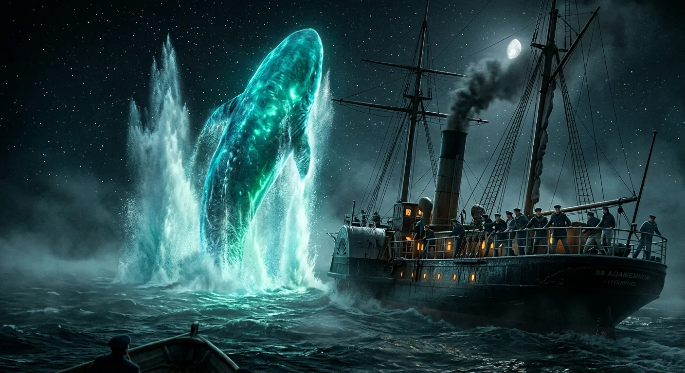
The Ocean's Mysterious Leviathan Awakens
The year 1866 distinguished itself by an occurrence most peculiar and inexplicable—a phenomenon that seized the imagination of the maritime world and spread its tendrils of rumour deep into the interior of continents, where even those who had never glimpsed salt water found themselves debating the matter over dinner tables and in lecture halls. Merchants and common sailors, naval officers and government ministers across Europe and America turned their attention to a singular question: what manner of creature—or thing—had begun to haunt the shipping lanes of the world's great oceans?
For vessels traversing these waters had encountered something unprecedented. Log-books from ships of every nation recorded sightings of an enormous object, spindle-shaped and occasionally phosphorescent, possessing a rapidity of movement that defied all natural explanation. The creature—if creature it was—surpassed in dimensions any cetacean known to science. Conservative estimates placed its length at some two hundred feet, whilst more excitable observers insisted upon measurements so fantastical as to strain credulity entirely. Yet exist it did, for the evidence mounted with each passing month.
The steamer *Governor Higginson*, sailing off the Australian coast in July, had mistaken the thing for an uncharted sandbank until it expelled twin columns of water a hundred and fifty feet into the air. Three days later and seven hundred nautical leagues distant, the *Columbus* observed the same phenomenon in Pacific waters—a feat of locomotion that no whale could accomplish. The *Helvetia* and *Shannon* encountered it simultaneously in the Atlantic, their officers calculating its minimum length at three hundred and fifty feet, dwarfing even the greatest whales known to frequent the Aleutian waters.
Reports accumulated with the methodical persistence of waves upon a shore. The transatlantic *Pereire* offered fresh observations; the *Etna* suffered an actual collision with the beast; officers aboard the French frigate *Normandie* prepared formal documentation. Public opinion swelled accordingly. In cafés the monster inspired songs; in newspapers, caricatures; upon the stage, dramatic representations both serious and satirical. The legends of antiquity were summoned forth—Aristotle and Pliny, Bishop Pontoppidan's Norwegian tales, the testimony of Mr. Harrington who had witnessed an enormous serpent from the deck of the *Castillan* in 1857.
For six months the scientific journals waged their war of ink, the believers and sceptics trading increasingly personal attacks until wit finally triumphed over wonder. A satirical article delivered what seemed the monster's death-blow, and the question appeared buried forever.
Yet the creature had not finished with mankind. In March of 1867, the *Moravian* of the Montreal Ocean Company struck something in the night—not a reef marked on any chart, but a shifting mass that sheared away part of her keel and left 237 passengers contemplating their mortality. Three weeks later, the *Scotia* of the Cunard line suffered a more dramatic assault. Something sharp and penetrating pierced her hull below the waterline, leaving a triangular rent two yards in diameter through iron plates nearly an inch and a half thick. The precision of the wound suggested not accident but intention—and the instrument, whatever it was, had withdrawn itself by some retrograde motion that the engineers could not explain.
From this moment, the creature ceased to be a curiosity and became a menace. Every unexplained shipwreck fell upon its shoulders; of the three thousand vessels lost annually, two hundred vanishing without trace were now attributed to this formidable cetacean. Communication between continents grew perilous, insurance premiums climbed, and the public demanded action.
The seas, they insisted, must be rid of this terror—whatever the cost, whatever the means required to hunt it down.
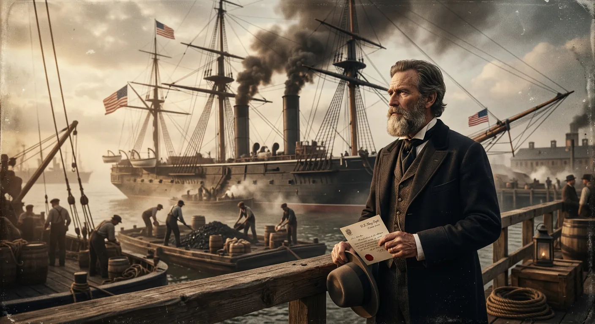
A Naturalist Weighs the Evidence
In the spring of that fateful year, Professor Pierre Aronnax of the Museum of Natural History in Paris found himself an unlikely figure at the center of a global maritime controversy. He had only recently returned from an arduous scientific expedition through the disagreeable territories of Nebraska, arriving in New York towards the end of March with crates of mineralogical, botanical, and zoological specimens awaiting careful classification. His departure for France was fixed for the first days of May—a timeline that fate, in its capricious manner, would soon render entirely irrelevant.
The professor was, by this juncture, thoroughly saturated with every published account of the mysterious phenomenon that had so alarmed the seafaring world. He had devoured American and European papers alike, yet found himself no closer to forming a definitive conclusion. The mystery confounded him utterly, driving his scientific mind from one extreme hypothesis to another with all the grace of a ship tossed between contradictory currents. Of one fact alone he remained certain: something tangible existed out there in the depths, and the skeptics need only examine the wound inflicted upon the Scotia to convert their incredulity into wonder.
By the time Aronnax reached New York, the debate had narrowed considerably. The hypothesis of a floating island or unapproachable sandbank—championed by minds of limited competence—had been thoroughly abandoned, for no geological formation, however extraordinary, could explain the creature's astonishing rapidity of movement. Similarly dismissed was the notion of some enormous derelict hull drifting the ocean currents. Two possibilities alone remained, cleaving public opinion into distinct camps: either the phenomenon represented a marine monster of colossal strength, or it constituted a submarine vessel of unprecedented motive power.
The submarine hypothesis, though superficially plausible, could not withstand systematic inquiry conducted across both hemispheres. That a private gentleman might possess such a machine strained credulity beyond its limits—where, when, and how could such a vessel have been constructed in secret? Governments, certainly, might harbor such destructive engines; these were disastrous times when human ingenuity had multiplied the instruments of war with alarming efficiency. Yet official declarations from England, France, Russia, Prussia, Spain, Italy, America, and even Turkey definitively rejected the possibility. No nation claimed responsibility; no evidence of clandestine construction emerged.
Aronnax's reputation preceded him. His quarto work in two volumes, "Mysteries of the Great Submarine Grounds," had earned him considerable standing in this rather obscure branch of Natural History, and distinguished persons sought his professional opinion. For a time he confined himself to judicious negation, but eventually, cornered by persistent inquiry—and by the New York Herald's direct solicitation—he was obliged to speak. His article, published on the thirtieth of April, proposed what his scientific conscience would allow: if the depths of the ocean remained largely unknown to human investigation, nothing prevented the existence of some marine animal of enormous power, perhaps a narwhal of colossal dimensions armed with a tusk of proportionate destructive capability.
The article generated considerable discussion and rallied numerous partisans. Aronnax had, with characteristic prudence, reserved himself an avenue of escape in his final sentences—acknowledging the possibility that something might exist beyond all conjecture—but in effect, he had admitted the monster's existence. Public opinion crystallized, insurance companies raised their premiums, and the United States government commissioned a swift frigate, the Abraham Lincoln, under Commander Farragut's command, to pursue the creature.
Then, with maddening perversity, the monster vanished entirely for two months—prompting transatlantic jesters to suggest the unicorn had intercepted a telegram through the submarine cable and was studying its pursuers' intentions. Impatience mounted until, on the second of July, a steamer returning from Shanghai reported sighting the animal in the North Pacific. The Abraham Lincoln was hastily revictualled and stocked with coal, and three hours before her departure from Brooklyn pier, Professor Aronnax received a letter that would alter the trajectory of his existence: an invitation from the Secretary of Marine to join the expedition, with a cabin placed at his disposal by Commander Farragut himself.
It was an offer that no naturalist of genuine scientific ambition could possibly refuse—though Aronnax could scarcely have imagined the extraordinary circumstances into which that acceptance would deliver him.
The rest is waiting.
58 illustrated classics. Cinematic, anime, and kids editions. $4.99 a month — about the price of a coffee.
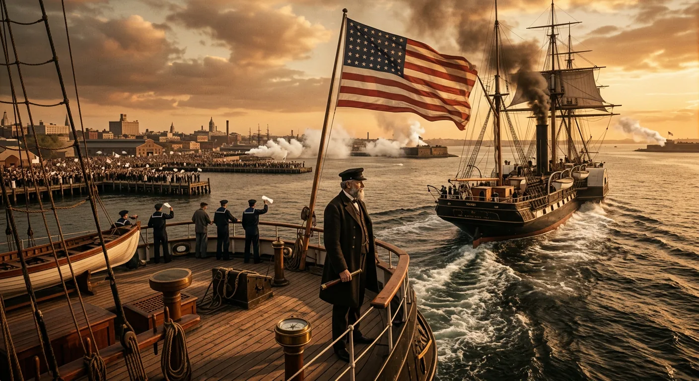
A Fateful Letter Changes Everything
The transformation that seized Professor Pierre Aronnax upon receiving J. B. Hobson's letter was nothing short of alchemical—a complete reversal of temperament accomplished in the space of three heartbeats. Before that fateful correspondence crossed his threshold, the weary naturalist had entertained no more intention of pursuing the infamous sea-unicorn than he had of swimming the frigid expanse of the North Sea; yet three seconds after digesting the honourable Secretary of Marine's words, he found himself possessed by a singular conviction that his true vocation—indeed, the very purpose for which he had been placed upon this Earth—was to hunt down this disturbing monster and purge it utterly from the world's oceans.
It must be acknowledged that the timing of this summons could scarcely have been less convenient. Aronnax had only just returned from an exhausting journey, his bones crying out for rest, his heart yearning for the familiar comforts of his modest lodging beside the Jardin des Plantes, where his dear and precious collections awaited him. Yet such considerations evaporated like morning mist before the sun. Fatigue, friends, and cherished specimens alike were abandoned without a moment's hesitation, and the American Government's offer was accepted with the sort of impetuous enthusiasm more commonly associated with youth than with a professor of forty years.
The Professor consoled himself with geographical rationalisations of dubious merit—all roads, he reasoned, eventually lead back to Europe, and perhaps this worthy animal might graciously permit itself to be captured in familiar waters. Yet the immediate reality remained inescapable: the narwhal must first be sought in the North Pacific Ocean, a route to France that constituted nothing less than a journey to the antipodes.
Enter Conseil, that paragon of Flemish devotion who had accompanied his master through a decade of scientific wanderings. This remarkable servant—phlegmatic by nature, regular from principle, zealous from habit—exhibited an almost supernatural imperviousness to life's surprises. Neither the length of journeys nor their destinations, whether China or Congo, had ever provoked from him the slightest complaint. His constitution defied illness, his muscles were solid, his nerves seemingly nonexistent, and his morals beyond reproach. His sole peculiarity lay in an excessive ceremoniousness that compelled him to address his master perpetually in the third person—a habit occasionally provoking, though hardly sufficient to diminish his value.
When informed of their imminent departure aboard the *Abraham Lincoln*, Conseil received the intelligence with characteristic equanimity. The Professor's cherished collections—the archiotherium, the hyracotherium, the oreodons, the cheropotamus—would be stored at the hotel; the live Babiroussa would be fed and eventually forwarded to France. That they were pursuing a creature capable of sinking frigates as easily as nutshells troubled Conseil not in the slightest.
The *Abraham Lincoln* proved admirably suited to her mission: a frigate of formidable speed, her high-pressure engines capable of sustaining seven atmospheres and propelling her at nearly eighteen knots and a third—a considerable velocity, though whether sufficient to overtake the gigantic cetacean remained to be seen. Commander Farragut welcomed the Professor warmly, and Conseil pronounced their after-cabin as comfortable as a hermit-crab's shell.
The departure from Brooklyn Pier unfolded amid scenes of considerable spectacle. Five hundred thousand throats raised successive cheers as thousands of handkerchiefs waved farewell. The frigate passed between saluting forts, hoisted her thirty-nine-starred colours thrice in response, and navigated the narrow channel past Sandy Hook Point. When at last the pilot descended to his waiting schooner and the escort vessels fell away at the lightship, the *Abraham Lincoln* turned her prow toward darker waters—and as eight bells struck and the lights of Fire Island vanished in the northwest, she ran at full steam onto the mysterious Atlantic, bearing her passengers toward adventures whose strangeness would strain the credulity of even the most receptive reader.
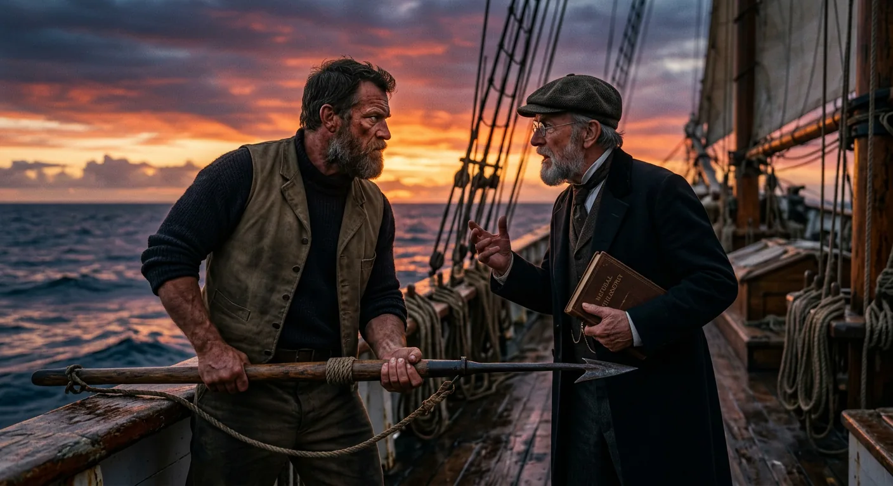
The Skeptical Harpooner's Introduction
Captain Farragut stood as one with his vessel, the *Abraham Lincoln*, a seafarer whose conviction regarding the mysterious cetacean admitted no opposition whatsoever. His belief in the creature resembled the faith of certain devout women in the biblical leviathan—an unshakeable certainty rooted not in reason but in something deeper and more immovable. He had sworn himself to the creature's destruction with all the romantic fatalism of a Knight of Rhodes riding forth to slay the serpent; either he would kill the narwhal, or the narwhal would kill him, and no alternative presented itself to his mind.
This singular conviction infected the entire ship. Officers gathered ceaselessly to discuss their chances of encounter, while common sailors voluntarily stationed themselves in the cross-trees despite the punishing heat that rendered the deck nearly unbearable beneath their feet. The promise of two thousand dollars to whoever first sighted the monster ensured that every eye aboard remained fixed upon the vast oceanic expanse with burning attention. Indeed, the frigate might well have been christened the *Argus* for its hundred watchful gazes—though one member of the company, the imperturbable Conseil, maintained a peculiar indifference that seemed almost rebellious against the prevailing enthusiasm.
Captain Farragut had equipped his vessel with every conceivable instrument of destruction: hand-thrown harpoons, barbed arrows, explosive duck-gun balls, and most impressively, a breech-loading gun of American manufacture that had been exhibited in 1867, capable of hurling nine-pound projectiles across ten miles of ocean. Yet superior to all these mechanical advantages was the presence aboard of Ned Land, the Canadian harpooner of legendary skill—a man in whom quickness, coolness, audacity, and cunning combined to form the prince of his dangerous profession.
Ned Land was a striking figure: tall, powerfully built, taciturn in disposition yet violent when crossed, with a boldness of expression that commanded immediate attention. His French-Canadian heritage—his family having fished the waters near Quebec when that city still belonged to France—drew him naturally toward the narrator, and between them developed a friendship cemented by the old language of Rabelais and the harpooner's magnificent tales of polar adventure, recounted with such natural poetry that they assumed the character of a northern Iliad.
Yet remarkably, this master of whales refused to believe in the unicorn's existence. When pressed upon the matter one evening off Cape Blanc, as the *Abraham Lincoln* neared the Pacific with the Straits of Magellan seven hundred miles to the south, Ned Land offered his professional skepticism: he had harpooned many cetaceans, killed several, yet none possessed weapons capable of scratching iron plates. The narrator countered with scientific reasoning, explaining that any creature inhabiting the ocean's profound depths must possess an organization of incalculable strength to withstand pressures mounting to millions of pounds per square inch—a body necessarily armored like an eight-inch ironclad frigate and capable, when hurled at express-train velocity, of devastating any vessel it struck.
The Canadian found himself shaken by these calculations, conceding that if such animals existed, they must indeed be as formidably constructed as the professor described—yet still he withheld full conviction, until the narrator posed the question that hung unanswered in the salt air between them: if no such creature existed, how then could one explain what had befallen the *Scotia*?
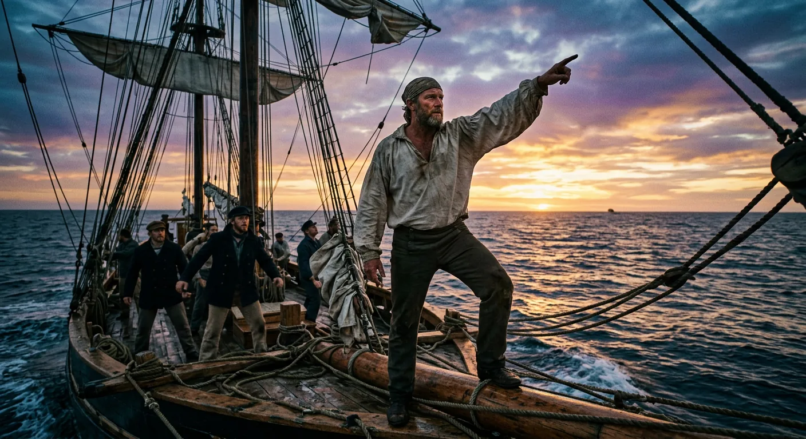
Ned Land's Skill and Fruitless Searching
The voyage of the *Abraham Lincoln* proceeded for some considerable time without incident worthy of particular notation, yet one circumstance arose which demonstrated with admirable clarity the remarkable prowess of the Canadian harpooner Ned Land. On the thirtieth of June, the frigate encountered American whalers who confessed complete ignorance regarding the narwhal's whereabouts; however, the captain of the *Monroe*, recognizing Land's reputation, solicited his assistance in pursuing a whale then in sight. Commander Farragut, curious to witness the harpooner's celebrated skill, granted permission—and fate rewarded this decision handsomely. With a double blow of extraordinary precision, Ned Land dispatched not one but two whales, striking the first directly through the heart and capturing the second after mere minutes of pursuit. One could not help but conclude that should the mysterious monster ever find itself within range of Land's harpoon, prudent men would not wager upon the creature's survival.
The frigate skirted the southeastern coast of America with considerable rapidity, and by the third of July had reached the opening of the Straits of Magellan. Yet Commander Farragut, disdaining the tortuous passage, elected instead to double Cape Horn—a decision the crew heartily endorsed, many sailors declaring with conviction that the narwhal could never navigate such narrow confines, being far too massive for the strait. By the sixth of July, the *Abraham Lincoln* had rounded that solitary rock at the American continent's extremity, and soon her screw was beating the Pacific waters.
The cry went forth: "Keep your eyes open!" And opened they remained—both eyes and glasses dazzled by the prospect of two thousand dollars, permitting themselves not an instant's repose. Even nyctalopes, those fortunate souls whose faculty of nocturnal vision multiplies their chances a hundredfold, would have found the task exhausting. The narrator himself, for whom monetary inducement held no particular charm, proved equally vigilant, surrendering but few minutes to meals and fewer hours to sleep, stationed perpetually upon the poop whilst the ever-phlegmatic Conseil counselled him against squinting. Yet each whale sighted proved merely common—cachalots that vanished amid storms of execration.
The frigate crossed the tropic of Capricorn, then the equator, before taking a more decided westerly course through the Pacific's central waters, approaching at last the theatre of the monster's reported diversions. The crew's nervous excitement mounted to intolerable heights—hearts palpitated fearfully, men could neither eat nor sleep, and twenty daily false alarms produced perspirations so violent that reaction became unavoidable. For three months the *Abraham Lincoln* furrowed the Northern Pacific, leaving no point of the Japanese or American coast unexplored, yet discovering nothing.
The warmest partisans became the most ardent detractors. Discontent spread from crew to captain, and only Farragut's resolute determination prevented an immediate southward retreat. At last, following Columbus's example, the commander requested three days' patience—if the monster failed to appear by November fifth, the frigate would make for European seas.
Two days passed in feverish vigilance. Bacon was trailed to attract the creature; small craft radiated outward exploring every patch of ocean. Yet the fourth of November arrived without revelation. On the evening of the fifth, with the deadline mere hours distant, the narrator stood at the starboard netting beside Conseil, contemplating their imminent failure and the ridicule awaiting them in France. Conseil was mid-sentence, preparing some observation regarding savants exposing themselves unwisely, when his words were forever interrupted—for cutting through the general silence came the unmistakable voice of Ned Land, crying out that the very object of their months-long pursuit had appeared upon their weather beam.
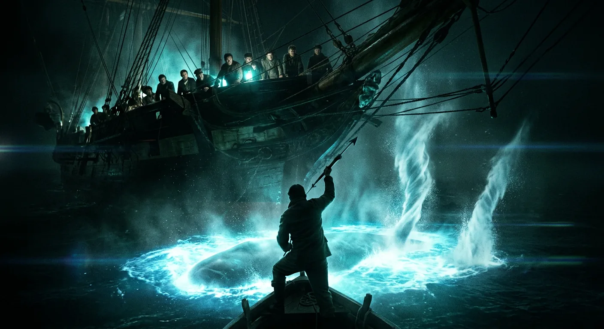
The Glowing Beast Circles the Frigate
The cry rang out across the deck, and in an instant every soul aboard the *Abraham Lincoln* abandoned their stations—commander and cabin boy alike, engineers deserting their engines, stokers their furnaces—all rushing toward the harpooner's position. The order to halt had been given, and the frigate drifted now upon her own momentum while profound darkness enveloped the vessel. How Ned Land had perceived anything at all in such impenetrable blackness remained a mystery, yet his eyes had not deceived him; there, at two cables' length off the starboard quarter, the sea itself appeared to burn with an inexplicable luminescence.
This was no mere phosphorescence, no natural phenomenon produced by pholades or salpæ, but rather an illumination of essentially electrical character—a magnificent irradiation that traced upon the waters an immense elongated oval, its centre condensed into a burning brilliance that died away in successive gradations. The monster had emerged, and it moved with terrifying intention: forwards, backwards, darting toward the frigate with a velocity double her own. Captain Farragut maneuvered desperately, ordering the helm hard over, reversing engines, yet the supernatural creature sported with the waves, encircling the vessel in rings of luminous dust before retreating to the horizon only to rush back with alarming rapidity, stopping mere twenty feet from the hull.
Upon the captain's ordinarily impassive countenance appeared an expression of unaccountable astonishment. He would not, he declared, imprudently risk his frigate against such a formidable and unknown adversary in darkness; daylight would alter the terms of engagement. The creature, he concluded, was evidently a gigantic narwhal—and an electric one at that, perhaps approachable only with weapons of similar nature, a gymnotus or torpedo.
The crew maintained their vigil through the interminable night, no man surrendering to sleep whilst the narwhal matched the frigate's moderated pace, seeming determined not to abandon the field. Toward midnight it vanished—or rather "died out" like an extinguished glow-worm—yet reappeared before dawn with deafening whistles and the thunderous panting of its breath, air engulfing into lungs like steam into vast cylinders of two thousand horse-power.
When daylight broke and the morning fog lifted, Ned Land's cry once more directed every eye toward the quarry: a long blackish body emerged a mile and a half distant, its violent tail producing considerable eddy, twin jets of steam rising one hundred twenty feet. The pursuit commenced in earnest. The *Abraham Lincoln* vomited torrents of black smoke, her bridge quaking, her screw driving her at eighteen and a half miles per hour—yet the accursed animal matched this pace precisely. The captain gnawed his beard in frustration; the sailors hurled futile abuse at the disdainful creature. Steam was increased to nineteen miles and three-tenths, then beyond, the masts trembling to their stepping holes, yet still the cetacean grew warm itself, maintaining identical velocity, occasionally permitting them to gain ground only to steal away at thirty miles per hour, circling the frigate in mockery.
At noon they had advanced not a yard since morning. Conical bullets were employed; an old grey-bearded gunner took careful aim, and though his shot struck true, it merely slid off the rounded surface and was lost in the depths. The chase continued three hundred miles that unlucky November sixth, yet exhaustion, it seemed, was unknown to this creature that behaved less like flesh than steam engine.
Night descended, and with it the electric light returned, pure and intense as before—yet the narwhal now floated motionless, apparently sleeping. The captain seized his advantage, advancing cautiously at half steam until the frigate stood but two cables' lengths from the burning focus. In the profound silence, Ned Land positioned himself beneath the bowsprit, grappling the martingale, his terrible harpoon poised scarcely twenty feet from the motionless animal. His arm straightened; the weapon flew; the sonorous strike rang against what seemed a hard body—and in that instant the electric light extinguished, two enormous waterspouts crashed over the bridge, and I found myself hurled over the rail into the black and churning sea.
What followed in those desperate waters would prove more extraordinary still than all that had preceded it.
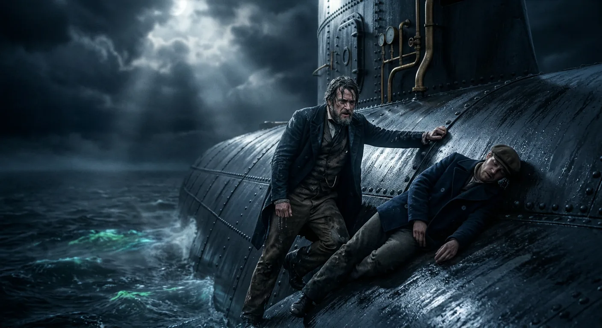
Adrift in Darkness With Conseil
The violence of my ejection from the *Abraham Lincoln* proved so sudden, so complete in its disorientation, that the precise sensations accompanying my descent into those dark waters have remained, even now, somewhat obscured by the trauma of the moment. I found myself drawn downward to a depth of perhaps twenty feet—a considerable submersion for any man, though I confess myself a swimmer of reasonable competence, if hardly to be ranked among such aquatic masters as Byron or the melancholy Poe. Two vigorous strokes restored me to the surface, whereupon my first and most desperate inquiry concerned itself with the whereabouts of the frigate. The darkness, however, proved utterly impenetrable; I glimpsed only a black mass retreating eastward, its beacon lights fading into that infinite gloom like dying stars. The *Abraham Lincoln* was gone, and with her, all reasonable hope of salvation.
My garments clung to my limbs with malevolent tenacity, transforming the simple act of swimming into a struggle against premature burial. I shouted for assistance—futile cries swallowed by the indifferent sea—and felt myself sinking toward that final abyss when a strong hand seized my clothing and hauled me upward. It was Conseil, my faithful servant, who had followed his master into the waters with characteristic devotion, considering such sacrifice entirely natural to his station.
The intelligence Conseil provided proved as sobering as the cold waves themselves: the monster's assault had shattered both screw and rudder, rendering the frigate helpless to return for us. We resolved therefore to husband our strength through systematic alternation—one swimming while the other rested upon his back—calculating that eight hours might pass before sunrise. The phosphorescent waters glittered beneath our movements like quicksilver, offering what meager beauty remains available to the drowning.
Near one o'clock, exhaustion overcame me entirely; my limbs seized with violent cramps, and preservation devolved solely upon poor Conseil. Yet the moon emerged to reanimate our spirits, and with it came a responding cry to Conseil's desperate calls—a human voice in that wilderness of water. My servant glimpsed something ahead before collapsing from exertion, and the thought of the monster surfaced unbidden in my mind, though the days of Jonahs finding refuge in whales' bellies had surely passed.
I lost consciousness as a hard body struck me, awakening to find myself rescued not only by Conseil's faithful efforts but by the Canadian harpooner, Ned Land, who had discovered footing upon what he termed a "floating island"—our gigantic narwhal itself. His explanation arrested my scientific faculties entirely: his harpoon had failed to penetrate because, as he declared with characteristic bluntness, "that beast is made of sheet iron."
I scrambled atop the object and conducted my own examination. No scales, no organic texture—only a smooth, polished surface that rang metallic beneath my kicks, constructed unmistakably of riveted plates. The learned world's perplexing phenomenon, the terror of two hemispheres, resolved itself into something more astonishing still: a human construction, a submarine vessel of steel propelled by mechanical screw.
Throughout that interminable night we clung to its iron back, hearing fugitive sounds—words of command—emanating from within. At daybreak, as the craft began to sink beneath us, Ned Land's frustrated kicks summoned forth a figure who vanished as quickly as he appeared. Moments later, eight masked men emerged silently from the vessel's interior and drew us down into the bowels of their formidable machine—a descent that promised answers to mysteries far deeper than any ocean.
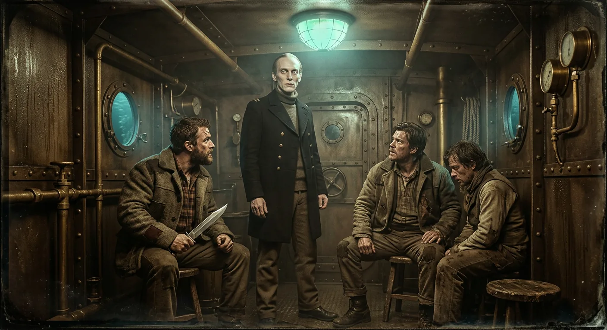
Captives in the Electric Darkness
The abduction was executed with such violent swiftness that Professor Aronnax found himself plunged into absolute darkness before his dazzled eyes could comprehend the transition from the blinding exterior light to the pitch-black bowels of the mysterious vessel. Down an iron ladder they descended—the Professor, the faithful Conseil, and the Canadian harpooner Ned Land—until a door clanged shut behind them with terrible finality, sealing them in a prison whose dimensions and nature remained, for some considerable minutes, utterly impenetrable to their senses.
Ned Land, that indomitable specimen of maritime belligerence, gave immediate voice to his indignation, declaring their captors worse than Scottish innkeepers and scarcely better than cannibals, whilst brandishing his bowie knife with characteristic impetuosity. Conseil, ever the philosophical servant, counseled patience in his imperturbable manner. The Professor, meanwhile, undertook a methodical examination of their cell, discovering by touch alone iron walls of bolted plates, a wooden table, several stools, and flooring muffled by thick mats of phormium—a cabin measuring approximately twenty feet by ten, though its height defied even Ned Land's considerable reach.
After half an hour of darkness, the chamber was suddenly flooded with electric luminescence of such extraordinary intensity that the Professor was compelled to shield his eyes against its brilliance. This phosphorescent illumination emanated from a half-globe mounted in the ceiling—the same magnificent light he had observed playing about the submarine craft during their maritime pursuit. The cabin, thus revealed, proved spartan in its furnishings but suggestive of advanced technological sophistication.
The appearance of two strangers through the hermetically sealed door occasioned the Professor's most penetrating powers of physiological observation. The first man presented himself as a robust southerner, muscular and dark-haired, quick of eye and movement. But it was his companion who commanded the most detailed scrutiny—a figure of remarkable self-possession, tall, pale-skinned, with a noble forehead and eyes set unusually far apart, granting him a visual range that seemed almost supernatural in its scope. This commanding personage possessed the unmistakable bearing of authority, his countenance readable by the principles of Gratiolet and Engel as one of supreme confidence, profound calm, and formidable energy.
The strangers conversed in an unknown tongue—sonorous, harmonious, flexible in its vowel accentuations—yet proved utterly unresponsive to the Professor's French narration of their adventures, Ned Land's Anglo-Saxon rendition, Conseil's elegant German, and even the Professor's recourse to Latin. This linguistic impasse proved most vexing, the nationality of their captors remaining as indeterminate as their mysterious language, though the Professor detected in their complexions the unmistakable evidence of low latitudes—southern blood that might indicate Spanish, Turkish, Arabian, or Indian origins.
Following the strangers' withdrawal, a steward—apparently deaf or dumb—arrived bearing garments of unfamiliar textile and dishes of bell metal containing an elegant repast. The meal, though wanting bread and wine, featured exquisitely prepared fish of uncertain taxonomy, served upon utensils bearing an enigmatic inscription: *Mobilis in Mobili*, surmounted by the letter N—presumably the initial of the vessel's mysterious commander. Thus reassured that their hosts intended no immediate harm, Ned and Conseil succumbed to exhaustion upon the cabin carpet, whilst the Professor, his mind besieged by unanswerable questions regarding their location and the strange power propelling them through the depths, eventually surrendered to troubled dreams of unknown submarine creatures.
As sleep claimed him at last, the Professor sensed—or fancied he sensed—the machine descending into the lowest beds of the sea, carrying them ever deeper into mysteries that the coming hours would surely illuminate.
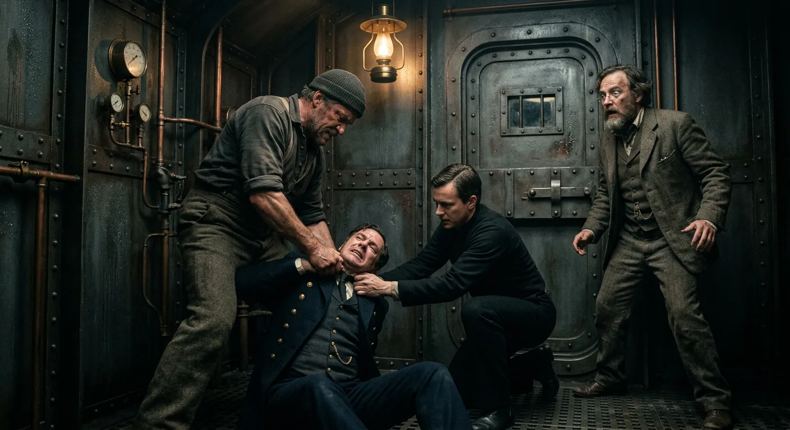
Captives Await Air and Answers
The duration of their slumber remained a mystery to Professor Aronnax, though its restorative effects upon his faculties proved beyond dispute. He awoke first, his mind remarkably clear despite the somewhat unforgiving surface upon which he had lain, whilst his companions—the faithful Conseil and the formidable Canadian harpooner—remained motionless in their corner, still surrendered to unconsciousness.
Upon conducting an attentive examination of their metallic prison, Aronnax discovered that nothing within had changed; the cell remained obstinately a cell, its occupants obstinately prisoners. The steward had evidently cleared the table during their repose, yet this domestic attention did little to address a more pressing concern: the atmosphere had grown oppressively heavy, each breath laboured and insufficient. The Professor's scientific mind calculated the difficulty with characteristic precision—each man consuming, in the span of a single hour, the oxygen contained in more than one hundred and seventy-six pints of air, whilst simultaneously charging that same atmosphere with carbonic acid until it became quite unbreathable.
This respiratory crisis prompted speculation regarding the submarine's ventilation mechanisms. Would the vessel's mysterious commander employ chemical means, extracting oxygen from chlorate of potash through application of heat whilst absorbing carbonic acid with caustic potash? Or would he adopt the more economical expedient of rising to the surface, cetacean-fashion, to renew the atmospheric provision? The answer arrived with blessed swiftness—a current of pure air, perfumed with saline emanations and charged with invigorating iodine, flooded the cell. The iron-plated monster had surfaced to breathe, precisely as whales do, and Aronnax soon located the ventilator above the door through which this beneficial whiff entered their quarters.
The reviving air roused both Conseil and Ned Land, the former inquiring after his master's rest with customary politeness, the latter—true seaman that he was—immediately detecting the sea breeze. Upon learning what had transpired, the Canadian declared the mystery of those roarings solved: when the supposed narwhal had sighted the *Abraham Lincoln*, it had merely been taking breath.
Yet the question of time proved vexing, and hunger more vexing still. Aronnax surmised they had slept a full twenty-four hours, meaning their next meal ought properly to be breakfast rather than dinner—a distinction of little consequence to Ned Land, who cared only that the steward appear with sustenance. Conseil, ever placid, counselled conformity to the vessel's schedule, prompting the Canadian to observe with mounting impatience that his companion would return thanks before grace and die of starvation rather than utter complaint.
Two hours passed without the steward's appearance, and Ned Land's temper swelled to dangerous proportions. He cried out, he shouted, but the walls remained deaf, the vessel still as death itself, plunged into the depths where it belonged no longer to earth. The silence grew dreadful; Aronnax felt terror, Conseil maintained his preternatural calm, and Ned Land roared with frustrated rage.
At last, steps sounded upon the metal flags outside. The locks turned, the door opened, and the steward appeared—only to find himself immediately thrown to the floor by the Canadian, powerful hands closing about his throat. Conseil struggled to unclasp the harpooner's grip from the choking victim, and Aronnax prepared to intervene, when suddenly he found himself frozen in place by words spoken clearly in French: *"Be quiet, Master Land; and you, Professor, will you be so good as to listen to me?"*
With this unexpected command hanging in the close air of their prison, it became evident that their mysterious captor had at last determined to reveal himself and his intentions.
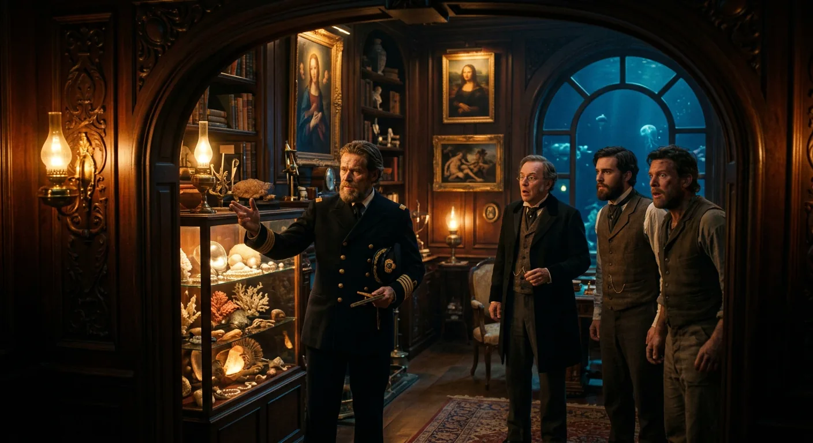
The Captain Reveals Himself
In the confined quarters of that submarine vessel which had so lately been mistaken for a sea-monster of biblical proportions, the commander at last deigned to reveal himself—not with theatrical flourish, but with the measured deliberation of a man who had long ago ceased to owe explanations to anyone. The steward, whom Ned Land had nearly throttled in his Canadian fury, retreated at a mere gesture from his master, whilst Conseil and I awaited the unfolding of this extraordinary scene with that particular stupefaction which accompanies the wholesale overturning of one's assumptions.
The commander—who would presently introduce himself as Captain Nemo, a name signifying nothing less than *Nobody*—confessed with some irony that he had possessed all along the faculty of addressing us in French, English, German, or Latin, having merely wished to observe his captives before committing himself to discourse. He enumerated our identities with such precision that it became evident he had conducted investigations of his own: M. Pierre Aronnax, Professor of Natural History at the Paris Museum; Conseil, that faithful servant of irreproachable third-person address; and Ned Land, harpooner late of the frigate *Abraham Lincoln*. There was no question in this recitation, only the cold establishment of facts.
What followed was a philosophical confrontation as much as a practical negotiation. Captain Nemo declared himself a man who had severed all ties with humanity, who acknowledged neither the laws of nations nor the conventions of civilised society. When I protested that his treatment of us bordered upon savagery, he replied with chilling composure that he was not what I called a civilised man—that he had done with that world entirely, for reasons he alone possessed the right to appreciate. A flash of some terrible past illuminated his countenance momentarily, and I glimpsed in those eyes the weight of injuries so profound that they had driven him beneath the waves, beyond the reach of any tribunal.
Yet Captain Nemo offered us not death but perpetual imprisonment dressed in the garments of liberty. We should be free, he said, to roam the *Nautilus*, to observe, to study—save when certain events necessitated our confinement to quarters. Ned Land, with characteristic bluntness, refused to give his word of honour not to escape, whereupon Nemo coolly replied that he had not asked for it. The choice presented to us was stark: life aboard his vessel, or oblivion beneath the waves. We were prisoners of war, he declared, and he kept us not for our own sake but to protect the secret of his existence.
And yet, what a prison! What followed was a tour that would have reduced any naturalist to tears of scientific rapture. The dining-room, severe and elegant, offered a repast drawn entirely from the sea—turtle fillet masquerading as meat, dolphins' liver prepared as ragout, cream furnished by cetaceans, sugar extracted from great northern fucus. Captain Nemo spoke of the ocean with a passion bordering upon religious ecstasy, calling it the Living Infinite, the only realm where true independence existed, where at thirty feet below the surface the reign of despots ceased and their power disappeared utterly.
The library contained twelve thousand volumes—his last connection to a world he had renounced—and cigars fashioned not from Havannah tobacco but from nicotine-rich sea-weed. The drawing-room revealed itself as a museum of staggering wealth: Raphaels and da Vincis, Titians and Murillos, bronzes after antique models, and cases upon cases of marine specimens that represented every sea on the globe. The pearl collection alone surpassed any sovereign's treasury, including specimens larger than pigeon's eggs, exceeding in value the legendary pearl Tavernier had sold to the Shah of Persia.
Captain Nemo watched my astonishment with evident satisfaction, remarking that I should not exhaust my admiration upon his collections when the vessel itself—with its mysterious motive power and ingenious contrivances—remained yet unexplained. He conducted me to my cabin, elegant and comfortable, adjoining his own monkish quarters of iron bedstead and strict necessaries.
As I seated myself at his invitation, I understood that the true revelations were only now to begin—that the secrets of the *Nautilus* itself would shortly be laid before me.
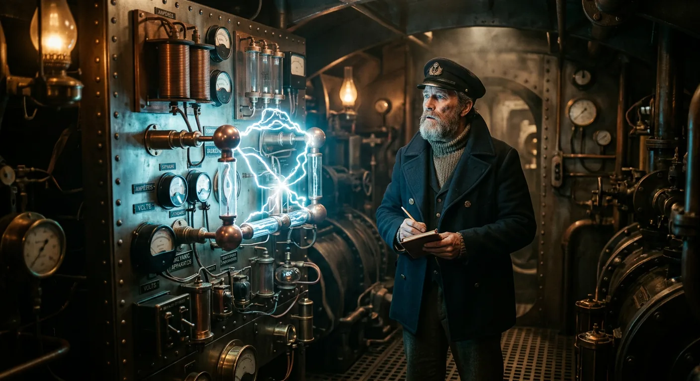
Powering the Deep with Ocean's Energy
Within the austere confines of Captain Nemo's private quarters, Professor Aronnax found himself surrounded by an impressive array of instruments—those familiar companions of maritime navigation hanging upon the walls like so many sentinels of the deep. The Captain, with characteristic precision, enumerated the functions of each: the thermometer registering the vessel's internal temperature, the barometer prophesying atmospheric changes, the hygrometer measuring aerial dryness, the storm-glass foretelling tempests through its decomposing contents, and the sextant, chronometers, and compass serving their eternal purposes of fixing position upon the trackless ocean. Yet these conventional instruments, Aronnax observed, were merely prelude to marvels far more extraordinary—the peculiar apparatus answering to the *Nautilus's* singular requirements.
It was here that Captain Nemo revealed the animating principle of his remarkable vessel: electricity. This powerful agent, he declared with evident pride, reigned supreme aboard the submarine, providing illumination, warmth, and motive force—indeed, serving as nothing less than the very soul of his mechanical apparatus. When Aronnax expressed skepticism regarding electricity's capacity to generate such tremendous speed, having observed the limitations of contemporary electrical applications, Nemo explained his revolutionary process. The ocean itself furnished his materials: from sea-water he extracted sodium, that abundant element comprising so significant a portion of the brine, and from this sodium he manufactured an electricity unknown to the scientific establishments of the surface world. The sea, that inexhaustible source, provided everything—light, heat, motion, and life itself for the *Nautilus*.
The Captain demonstrated further applications of this miraculous agent: an electrical clock divided into twenty-four hours like Italian timepieces, keeping perfect regularity in depths where neither sun nor moon penetrated; a speed indicator connected by electric thread to the screw, registering their present velocity at fifteen miles an hour; and powerful pumps enabling prolonged submersion in the ocean's depths.
Their tour progressed through the vessel's remarkable anatomy. Aronnax carefully catalogued the anterior compartments—dining-room, library, drawing-room, Captain's quarters, his own cabin, and air reservoir—measuring in total some thirty-five yards, each section separated by hermetically sealed water-tight partitions secured with india-rubber instruments. At the vessel's centre, an iron ladder led to a man-hole connecting with a small boat ingeniously concealed within the hull's upper portion, a craft both light and insubmersible, which could be launched from beneath the waves through an ingenious system of bolts and screw-pressured hatches. Most remarkably, Captain Nemo need not pursue this vessel upon its return; an electric thread connected them, and he had merely to telegraph his commands for the *Nautilus* to retrieve him.
Passing the cabin where Conseil and Ned Land devoured their repast with considerable avidity, Aronnax observed the kitchen—where electricity performed all culinary functions through platina sponges distributing regulated heat—and the bathroom with its hot and cold water taps. The crew's berthroom remained tantalizingly closed, concealing any evidence of the vessel's complement. Finally, they entered the engine-room, a clearly lighted compartment of sixty-five feet, where Bunsen's powerful contrivances generated electricity transmitted through great electro-magnets to a magnificent screw measuring nineteen feet in diameter, capable of achieving fifty miles per hour.
Yet questions multiplied in Aronnax's scientific mind: how did the vessel navigate the crushing pressures of the depths, and how did it return to the surface? Captain Nemo's response carried an ominous undertone—since the Professor might never leave the submarine boat, he would learn everything in the saloon, their usual study, where the full secrets of the *Nautilus* awaited revelation.
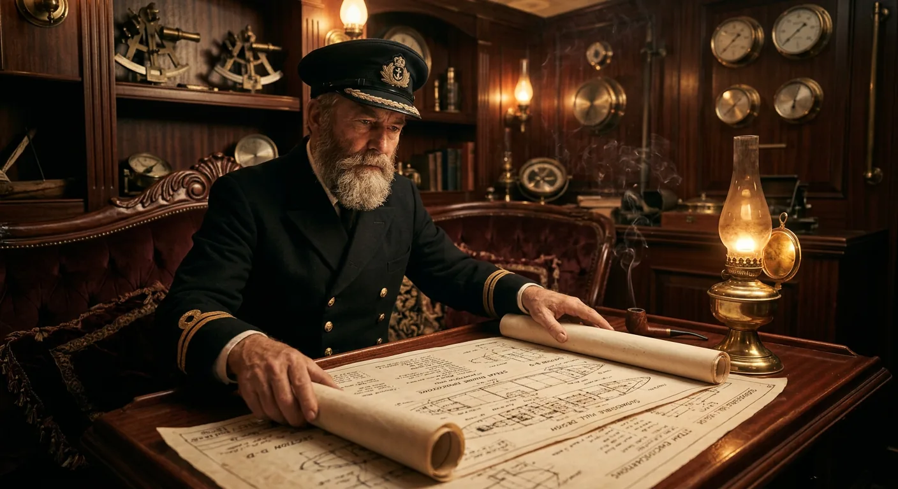
Anatomy of the Nautilus Revealed
Seated upon a divan in the saloon, with the fragrant curl of tobacco smoke drifting between them, Captain Nemo unfurled before Professor Aronnax the technical mysteries of the *Nautilus*—that extraordinary vessel which had, until this moment, remained as enigmatic in its construction as in its purpose. With the methodical precision of an engineer addressing a scientific congress, the Captain produced sketches detailing plan, section, and elevation, and thereupon commenced an exposition of figures and dimensions that would have satisfied the most exacting mathematician.
The submarine, Nemo explained, assumed the elongated form of a cigar—a shape already proven in similar London constructions—measuring precisely 232 feet in length and twenty-six feet at its maximum breadth. These proportions, he noted with evident satisfaction, permitted the water to slide off with minimal resistance, allowing the vessel to glide through the depths as though the ocean itself conspired to ease her passage. The *Nautilus* displaced some 1,500 tons when fully submerged, her dual hulls—joined by T-shaped irons and composed of steel plates whose density approached that of water itself—rendering her as impervious to the roughest seas as if she were carved from solid block.
Yet it was the matter of submersion and ascent that drew from Aronnax his sharpest questions. How, he demanded, could any vessel overcome the tremendous pressure encountered at great depths—the crushing force of one hundred atmospheres at a thousand feet, which would require pumps of seemingly impossible power? To this the Captain replied with characteristic confidence: electricity alone could furnish such dynamic force, its potential being, as he declared, "almost infinite." The pumps of the *Nautilus* had already demonstrated their tremendous capacity when their jets of water burst like a torrent upon the deck of the *Abraham Lincoln*.
Navigation, too, received its due explanation. An ordinary rudder governed horizontal movement, whilst two inclined planes fastened to the vessel's sides enabled her to rise and sink diagonally according to their inclination. The steersman occupied a raised, glazed box fitted with thick lenses capable of withstanding extraordinary pressure, and behind him a powerful electric reflector illuminated the sea for half a mile ahead—that very phosphorescence which had so puzzled observers who mistook the *Nautilus* for some luminous narwhal of supernatural proportions.
When conversation turned to the vessel's construction, Nemo revealed how component parts had been procured from workshops scattered across the globe—the keel from Creusot, the screw from Glasgow, the engine from Krupp in Prussia—each order placed under different names to preserve absolute secrecy. Assembly had occurred upon a desert island, where fire subsequently obliterated all evidence of the enterprise. The cost? Some £200,000 complete with her collections and works of art. And the Captain himself? Immensely rich, he claimed—wealthy enough to discharge the entire national debt of France without noticing the expenditure.
Aronnax stared at this singular person, uncertain whether he confronted genius or madness, truth or elaborate fiction. Only time, he knew, would render its verdict—and time, aboard the *Nautilus*, promised revelations stranger still than figures and dimensions could convey.
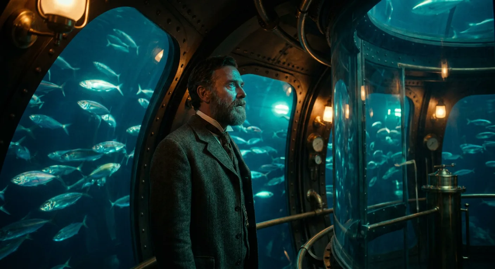
Charting the Pacific's Warm Current
The ocean, that vast liquid realm covering some eighty million acres of the terrestrial globe, comprises a spherical body of water whose weight would stagger the most rigorous mathematical imagination—three quintillions of tons, a figure so enormous that one must pause to comprehend it as one comprehends the infinite itself. This fluid mass, equal to all the water discharged by every river on earth across forty thousand years, had once prevailed everywhere during those primordial geological epochs when the igneous period succeeded the aqueous, before mountains thrust themselves upward through partial deluges and continents wrested solid ground from liquid dominion. Now divided into five great oceanic portions, these waters stretched before the *Nautilus* in the form of the Pacific—that quietest of seas, with its broad, slow currents and abundant rain—the very theatre upon which fate had destined Professor Aronnax to travel under circumstances most extraordinary.
Captain Nemo, with characteristic precision, announced their position-taking at a quarter to twelve, pressing an electric clock thrice to set the pumps driving water from the tanks. The *Nautilus* rose until its platform emerged three feet above the surface, that spindle-shaped iron hull—its overlapping plates resembling nothing so much as the shell of some great terrestrial reptile—explaining at last why observers had mistaken this mechanical marvel for a marine animal. Upon the platform stood the long-boat half-buried in the hull, fore and aft the cages with their thick lenticular glasses sheltering both steersman and brilliant lantern. The sea presented itself beautiful and pure, the horizon free from fog, nothing in sight but a vast desert of water slightly yellowed by the Japanese coast.
With the stillness of marble, Nemo took the sun's altitude by sextant, fixing their coordinates before descending and leaving Aronnax alone with large-scale maps and his own tumultuous reflections upon the mystery of this enigmatic commander. An hour passed before the professor's eyes fell upon the planisphere, his finger tracing to where latitude and longitude crossed—the very path of the Kuro-Scivo, that Black River of Japan which leaves the Gulf of Bengal warmed by tropical rays, crosses the Straits of Malacca, and carries camphor trunks and indigenous productions into the North Pacific, edging ocean waves with the pure indigo of its warmth.
The reverie broke with the arrival of Ned Land and Conseil, those brave companions left petrified by the saloon's wonders. The Canadian demanded to know their whereabouts—"In the museum at Quebec?"—and pressed for intelligence regarding the crew's numbers, still harboring schemes of escape. But Aronnax counseled patience and wonder over resistance, urging them to appreciate this masterpiece of modern industry rather than blindly plot against it.
Ned Land had scarcely protested their blind imprisonment when darkness swallowed the luminous ceiling, panels sliding at the vessel's sides until light broke through two oblong openings—crystal plates revealing the liquid mass vividly illuminated by electric gleam. The sea appeared visible for a mile, the transparency far beyond rock-water, no longer merely luminous but transformed into liquid light itself. Even the harpooner, forgetting his ill-temper, muttered that one would travel far to witness such spectacle, while Aronnax understood at last the nature of Captain Nemo's existence: a world apart, treasuring wonders beyond imagination.
For two hours an aquatic army escorted them—green labre, banded mullet, Japanese scombrus with blue bodies and silvery heads, spider lampreys and serpents six feet long—each species more brilliant than the last, drawn by the electric focus like birds to flame. When iron panels finally closed upon this enchanting vision, Aronnax dined upon hawksbill turtle soup and emperor-holocanthus superior to salmon, then retired to his couch of zostera as the *Nautilus* glided rapidly through the Black River's current—carrying him deeper into mysteries yet unrevealed.
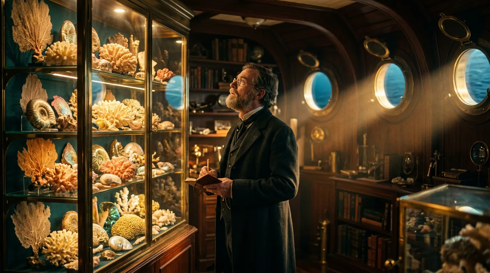
Mysterious Silence and a Hunting Invitation
The morning of November ninth found Professor Aronnax awakening after twelve hours of slumber, attended as ever by the faithful Conseil, who arrived with his customary inquiries after his master's repose whilst their Canadian companion, Ned Land, continued to demonstrate that remarkable aptitude for sleep which seemed his particular genius. Yet the Professor's thoughts dwelt neither upon rest nor upon conversation, but rather upon the conspicuous absence of Captain Nemo, whose failure to appear at the previous day's proceedings had aroused both curiosity and concern in equal measure.
The saloon stood deserted, and so Aronnax occupied himself with the submarine vessel's magnificent collections—the shell treasures gleaming behind their glass cases, the herbals bursting with dried yet vividly coloured marine specimens: vorticellæ and pavonariæ, delicate scarlet ceramies, fan-shaped agari, and those curious flat natabuli once erroneously classified among the zoophytes. The entire day passed without the Captain's appearance, nor did the great panels of the saloon open to reveal the wonders of the deep. The *Nautilus* maintained her course east-northeast at twelve knots, suspended between twenty-five and thirty fathoms below the surface.
The tenth of November brought identical solitude, identical desertion. Not a single crew member presented himself to the three captives, who found themselves speculating upon the Captain's inexplicable withdrawal. Was the singular man taken ill? Had his intentions toward them undergone some mysterious transformation? Yet as Conseil sagely observed, they enjoyed perfect liberty, delicate and abundant provisions, and their enigmatic host had kept faithfully to the terms of their strange compact. It was upon this day that Aronnax commenced the journal of these adventures, inscribing his observations upon paper manufactured from zostera marina—sea wrack pressed into service as the medium of scientific documentation.
Five days elapsed thus, marked only by Aronnax's morning ascents to the platform, where he observed the second-in-command pronounce each dawn the same incomprehensible phrase—*Nautron respoc lorni virch*—before descending without acknowledgment of the Professor's presence. The sun rose magnificently over grey yet calm seas; the clouds dispersed into mare's tails portending winds that meant nothing to a vessel which tempests could not frighten.
Then, on the sixteenth of November, the silence broke. Upon his table Aronnax discovered a note penned in bold Germanic characters: Captain Nemo invited the Professor and his companions to a hunting party in the forests of the island of Crespo on the morrow. The announcement provoked immediate speculation—Ned Land saw opportunity for escape upon *terra firma*, while Aronnax, consulting his planisphere, located the tiny island at 32° 40′ north latitude and 157° 50′ west longitude, some eighteen hundred miles from their starting point.
When morning came, Captain Nemo awaited them in the saloon, offering no explanation for his eight-day absence. Over breakfast—fish, holothuridæ, sea-weed, and water flavoured with fermented *Rhodomenia palmata*—he revealed that this hunt would be submarine, conducted with Rouquayrol breathing apparatus, Ruhmkorff electrical lamps, and air-guns firing glass capsules charged with electricity sufficient to fell any creature with a single touch. Aronnax's objections dissolved before the Captain's crushing technical explanations, and with nothing left but to take up his gun, the Professor followed Nemo aft, collecting Ned and Conseil as they proceeded toward the cell where their extraordinary walking-dress awaited them, on the threshold of an adventure beneath the waves unlike any the surface world had ever known.
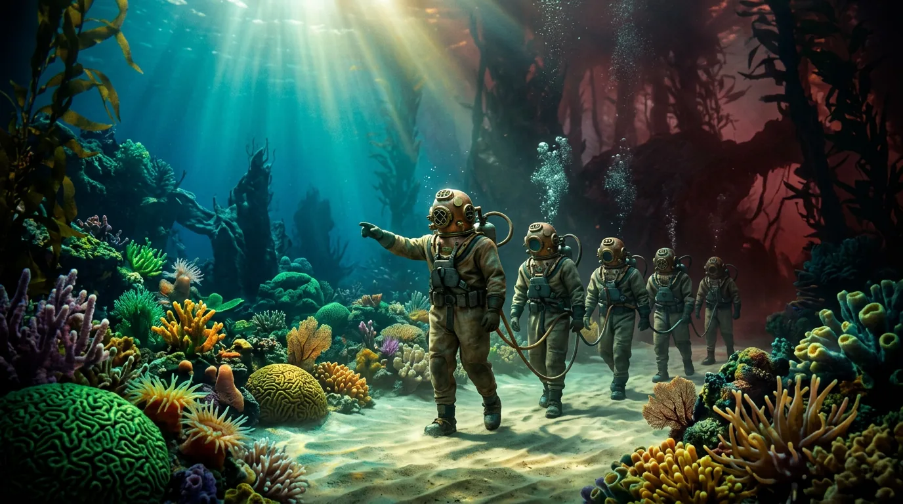
Exploring the Ocean's Sunlit Floor
The cell that served as arsenal and wardrobe aboard the *Nautilus* held a dozen diving apparatuses suspended from the partition like the peculiar fruit of some mechanical orchard, awaiting the moment when they might be pressed into service. Upon beholding these contrivances, Ned Land exhibited that particular species of reluctance which only a harpooner accustomed to the honest pursuits of the open sea might display—his visions of fresh game dissolving into disappointment when Professor Aronnax informed him that the forests of the Island of Crespo were, in point of fact, submarine forests entirely. Conseil, ever the faithful servant, declared his intention to follow his master wherever circumstance might lead, while Ned refused participation unless compelled by force—a compulsion Captain Nemo assured him would never be applied.
The suits themselves merited considerable examination, being constructed of india-rubber without seam, impervious to water and expressly designed to withstand tremendous pressure—a vast improvement upon the cork breastplates and cumbersome jackets that had passed for diving apparatus in the previous century. The ensemble comprised trousers terminating in thick boots weighted with leaden soles, and a waistcoat reinforced by copper bands crossing the chest to protect against the crushing weight of the depths whilst permitting the lungs their necessary freedom. Captain Nemo, accompanied by a companion of Herculean proportions, joined Aronnax and Conseil in donning these remarkable garments, their heads enclosed within copper helmets fitted with three thick glass apertures permitting observation in all directions. The Rouquayrol apparatus commenced its work upon the back, supplying air with admirable efficiency, though the Professor found himself quite unable to take a single step, glued as he was to the deck by his leaden soles.
The party was conducted into a small chamber where water-tight doors sealed them in profound darkness before the sea itself was admitted through cunningly designed taps, rising cold from feet to chest until the compartment stood entirely flooded. A second door opened upon the ocean, and in another instant their boots trod the bottom of the sea.
Words, the Professor confessed, proved wholly impotent to convey the wonders that followed. Captain Nemo led the procession, his companion trailing some steps behind, whilst Aronnax and Conseil walked abreast—though the metallic casings enclosing their heads rendered verbal communication impossible. The weight of clothing, shoes, and apparatus seemed to vanish entirely; the helmet rattled about the Professor's head like an almond in its shell. Solar rays penetrated thirty feet of water with astonishing power, illuminating objects clearly at a distance of one hundred and fifty yards before fading into gradations of ultramarine and vague obscurity beyond.
They traversed fine sand that served as a dazzling reflector, then magnificent rocks draped in tapestries of zoophytes whose edges shimmered with the seven colours of the spectrum—a kaleidoscope of green, yellow, orange, violet, indigo, and blue that would have delighted the most enthusiastic colourist. The Professor, unable to share his sensations with Conseil, resorted to declaiming into his copper helmet, expending air in vain expressions of wonder. They passed through brilliant gardens of isis, tuft-coral, prickly fungi, and anemones; crushed beneath their boots thousands of molluscs, hammer-heads, and angel-wings; walked beneath floating shoals of physalides and the opalescent umbrellas of medusæ. The sandy plain gave way to slimy ooze, then to luxuriant meadows of sea-weed rivalling the finest carpets woven by human hands.
After an hour and a half, near noon, they had descended to one hundred and five yards, enduring six atmospheres of pressure, the magical colours fading to a reddish twilight. It was then that Captain Nemo halted, waiting for the Professor to join him before pointing toward an obscure mass looming in the submarine shadows—the forest of the Island of Crespo, precisely as promised, and a spectacle that awaited their exploration with all the mystery the depths could offer.
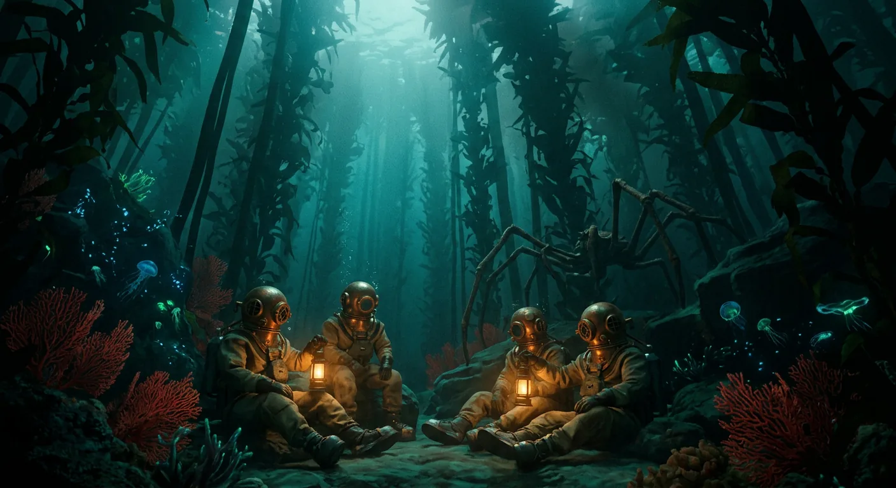
Wonders of the Underwater Wilderness
At last, the explorers arrived upon the borders of what must surely rank among the most extraordinary territories in Captain Nemo's vast underwater dominion—a submarine forest of such singular beauty and strangeness that Professor Aronnax found himself questioning the very laws of nature he had spent a lifetime studying. And indeed, what pioneer of hardier constitution would dare dispute Nemo's claim to this aquatic realm? What colonizer would venture forth, hatchet in hand, to fell these dark and silent copses?
Upon penetrating the vast arcades of this submerged woodland, Aronnax was immediately struck by a phenomenon he had never before witnessed: the region of perpendicularity. Not a single branch or frond bent horizontally; every filament, every ribbon of vegetation stretched rigidly upward toward the distant surface, maintained in their iron-rod postures by the density of the element that had produced them. The fuci and lianas stood as sentinels, and though one might bend them aside with a gloved hand, they resumed their vertical attitudes with mechanical precision the moment they were released.
The submarine flora proved richer than any arctic or tropical zone could boast—pavonari spread like fans catching some imperceptible current, scarlet ceramies extended their edible shoots, and fern-shaped nereocysti towered to heights of fifteen feet. Yet more remarkable still was the confusion between kingdoms that this twilight realm imposed upon the observer; zoophytes masqueraded as hydrophytes, and the fauna and flora mingled so intimately that even a trained naturalist might mistake one for the other. As one ingenious authority had observed, this was a fantastic element indeed, where the animal kingdom blossoms while the vegetable does not.
After an hour's march, Captain Nemo signaled a halt beneath an arbour of alariæ, and the party stretched themselves upon the ocean floor in welcome rest. Communication proved impossible through the thick diving apparatus, though Aronnax noted with some amusement how Conseil's eyes glistened with delight, the worthy fellow shaking himself within his copper helmet in the most comical fashion imaginable. Sleep came upon them unbidden—that insurmountable drowsiness which afflicts all divers—and Aronnax surrendered to heavy slumber.
He awoke to find the sun sinking toward the horizon and a monstrous sea-spider of some thirty-eight inches regarding him with squinting eyes, poised to spring. A blow from Captain Nemo's gun dispatched the hideous crustacean, but the encounter served as grim reminder that more dangerous creatures might lurk in these obscure depths.
The expedition pressed onward, descending to seventy-five fathoms—forty-five fathoms beyond what nature had seemingly imposed as man's submarine limit—until darkness required the activation of their electric apparatus. Vegetable life thinned and vanished, though animal life persisted. At last, a wall of superb granite rose before them: the very foundation of Crespo Island. Here ended Captain Nemo's domains; beyond lay earth he would not trample upon.
The return journey brought encounters both magnificent and terrifying: a valuable sea-otter fell to the Captain's gun, an albatross was shot from beneath the waves, and—most harrowing of all—two formidable tintoreas, those monstrous sharks with iron jaws and phosphorescent gleams, passed within inches of the prone explorers, who escaped by providence alone. Worn utterly from want of food and sleep, Aronnax at last regained the *Nautilus*, marveling at the wonders and perils of this surprising excursion—though he could not yet suspect what further mysteries Captain Nemo's vessel would soon reveal.
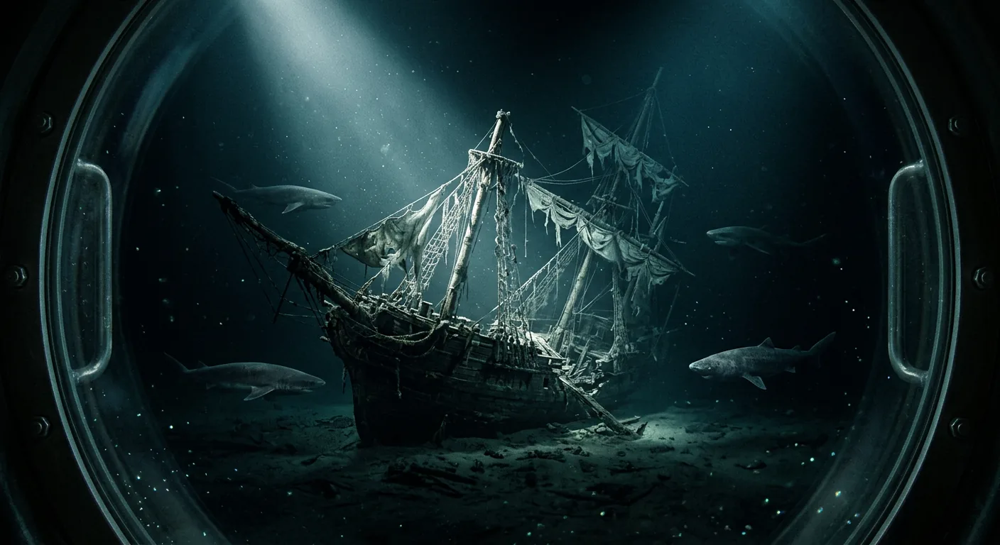
The Living Ocean's Depths Revealed
On the morning of the 18th of November, having recovered sufficiently from the previous day's exertions, Professor Aronnax ascended to the platform of the *Nautilus*, where he discovered Captain Nemo absorbed in astronomical observations, the enigmatic commander gazing abstractedly upon the ocean's magnificent expanse with that peculiar intensity which seemed to mark all his dealings with the deep. Meanwhile, the vessel's crew—a remarkable assemblage of strong, healthy men whose European features bore the unmistakable stamps of Irish, French, Slavic, and Greek origins—busied themselves hauling in the great *chalut* nets that had swept the productive Pacific waters through the night. The harvest proved extraordinary: more than nine hundredweight of curious specimens, an abundance made perpetually renewable by the *Nautilus's* remarkable speed and the irresistible attraction of her electric light, all of which were promptly dispatched to the steward's room for preservation or immediate consumption.
It was following this piscatorial enterprise that Captain Nemo addressed the Professor with unexpected philosophical ardor, speaking of the ocean as though it were a living organism possessed of tempers and gentle moods, of pulse and arteries and spasms—a circulation as genuine as that coursing through the veins of any terrestrial creature. The Captain's eloquence, invoking the learned Maury's theories, painted visions of nautical towns and submarine cities that might ascend each morning to breathe at the water's surface, free and independent settlements beyond the reach of despots. Yet here Nemo checked himself with a violent gesture, as if some sorrowful memory had intruded upon his reverie, and turned instead to questioning Aronnax about oceanic depths—a conversation that revealed the Pacific beneath them to measure some four thousand yards, rather less than the Professor had anticipated.
In the days and weeks that followed, Captain Nemo grew increasingly sparing of his visits, his presence becoming as rare as the abyssal creatures that occasionally drifted past the drawing-room's illuminated panels. The *Nautilus* maintained her south-easterly course at depths ranging between one hundred and one hundred fifty yards, crossing the Tropic of Cancer on November 26th, sighting the Sandwich Islands where the great Cook had met his end, passing the equator on the 1st of December, and glimpsing the French Marquesas before continuing her mysterious peregrinations across some two thousand additional miles of Pacific wilderness.
It was on the 11th of December, whilst the Professor sat reading Jean Macé's instructive volume *The Slaves of the Stomach* in the drawing-room and the *Nautilus* hung motionless at one thousand yards, that Conseil summoned him to the observation panels with an urgency that could not be ignored. There, suspended in the electric brilliance, hung a spectacle of unspeakable pathos: a vessel, recently wrecked and sunk perpendicular to the ocean floor, her masts broken, her hull heeling to port, her tattered shrouds still clinging to their chains like the remnants of a funeral shroud. Upon the bridge, bound by ropes in attitudes of frozen desperation, lay five corpses—four sailors contorted in their final agonies and, most terrible of all, a young mother standing at the poop, her infant raised above her head in one last despairing gesture of protection, the child's small arms still encircling its mother's neck. Only the steersman maintained his dignity in death, his grey hair plastered to his forehead, his hand yet gripping the helm as though guiding his vessel through eternity's depths. As enormous sharks circled with hungry anticipation, the *Nautilus* completed her circuit of the wreck, and in that instant Aronnax read upon the stern the vessel's name and provenance: *The Florida*, Sunderland.
The profound silence that had fallen upon the observers—Aronnax, Conseil, and Ned Land alike—spoke more eloquently than any words to the terrible mysteries that the ocean conceals within her depths, mysteries that the *Nautilus* would continue to unveil as she pressed ever onward through waters both wondrous and terrible.
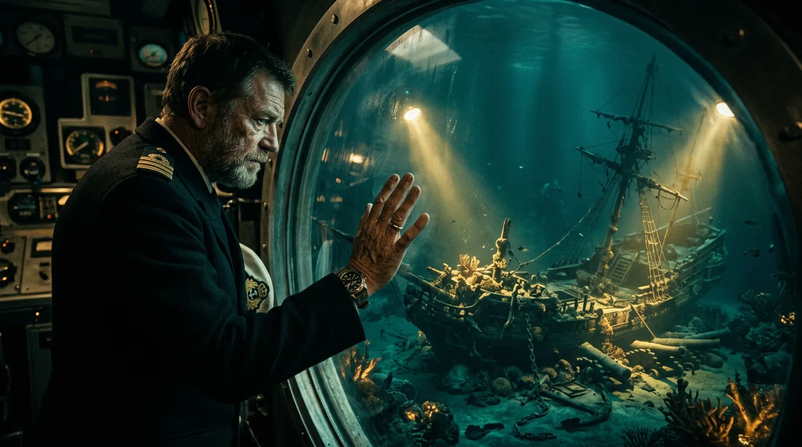
Coral Tombs and Lost Expeditions
The terrible spectacles of maritime disaster that had previously haunted our voyage proved themselves mere prelude to what awaited in these waters, for as the *Nautilus* pressed onward through December, we passed ceaselessly above the corroded remnants of shipwrecks—hulls succumbing to the patient ministrations of rust, cannons and anchors half-buried in sediment, the accumulated debris of countless vessels that had met their ends in these treacherous seas. On the eleventh of December we reached the Pomotou Islands, that archipelago Bougainville had so aptly christened the "dangerous group," stretching some five hundred leagues across the Pacific and comprising sixty coral formations, among them the Gambier group over which France holds dominion. Here I found occasion to expound upon my theories regarding the gradual continental expansion these coral islands might one day achieve—a fifth continent perhaps, linking New Zealand to the Marquesas through the patient labour of polypi—but Captain Nemo received such speculation with characteristic coldness. "The earth does not want new continents," he remarked, "but new men."
At Clermont-Tonnerre I surrendered myself to the study of madreporal systems with something approaching scholarly rapture, observing how these microscopic architects construct their calcareous monuments ring by ring, reef by reef, following Darwin's superior theory of atoll formation. Our electric lights illuminated walls plunging three hundred yards perpendicular into the depths, and when Conseil inquired as to the time required for such colossal construction, I astonished him with the learned estimate: an eighth of an inch per century.
We passed the Societies and graceful Tahiti, queen of the Pacific, then the New Hebrides on Christmas Day—a holiday Ned Land lamented with Protestant fervour while Captain Nemo remained conspicuously absent. A week elapsed before the Captain reappeared, and when at last he did, he approached my chart with the directness of a man who has long contemplated a particular destination. His finger fell upon a single point, and he spoke a single word: "Vanikoro."
The effect was indeed magical, for every educated person knew this name—the island where the great La Pérouse had vanished from history. I hastened to the platform, where two volcanic islands emerged from their coral girdle, and there, in the harbour of Vanou, Captain Nemo invited me to recount what the world knew of the tragedy. I obliged with the essential particulars: how La Pérouse and Captain de Langle had departed France in 1785 aboard the *Boussole* and *Astrolabe*, never to return; how subsequent expeditions under D'Entrecasteaux, Dillon, and Dumont d'Urville had gradually assembled the melancholy evidence—anchors, cannons, astronomical instruments, a bronze clock bearing the arsenal stamp of Brest. Yet the fate of the third vessel, constructed by the castaways themselves, remained unknown to all.
"No one knows," I confirmed—whereupon Captain Nemo led me to the saloon and opened the viewing panels.
There, beneath crusts of coral and living flowers of the sea, lay the unmistakable debris of La Pérouse's final voyage: iron stirrups, cannons, capstan fittings, the very stem of a ship. Captain Nemo's voice grew sorrowful as he recounted the complete history—how the *Boussole* had struck first, the *Astrolabe* perishing in its rescue attempt, how the survivors had built a smaller craft only to founder upon the Solomon Islands between Capes Deception and Satisfaction. As proof, he produced a corroded tin-plate box containing papers yellow with age yet still legible: the naval minister's instructions to La Pérouse, annotated in the margin by the hand of Louis XVI himself.
"A coral tomb makes a quiet grave," Captain Nemo murmured, gazing upon those submerged relics, "and I trust that I and my comrades will find no other."
His words hung in the submarine twilight, and I understood then that we had witnessed more than history preserved in salt water—we had glimpsed something of Captain Nemo's own soul, his kinship with those who find their final rest beneath the waves, far from the world of men that had failed them.
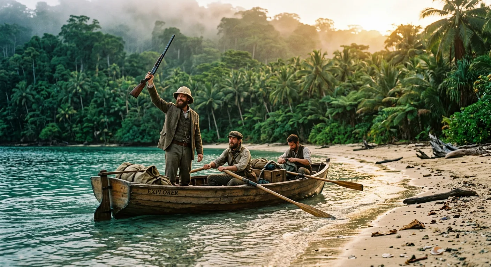
Stranded in Treacherous Coral Waters
The *Nautilus* departed the shores of Vanikoro with considerable haste during the final nights of December, her bow set upon a south-westerly course that carried Professor Aronnax and his companions across some seven hundred and fifty leagues in merely three days—a passage swift enough to deliver them from La Pérouse's ill-fated archipelago to the southeastern reaches of Papua by the first morning of January 1863.
It was upon this occasion that the faithful Conseil approached his master on the platform with New Year's salutations, a gesture that prompted Aronnax to muse upon the peculiar nature of their circumstances: what constituted happiness for men held captive beneath the waves, perpetually suspended between imprisonment and wonder? Conseil, ever philosophical in his simplicity, ventured that a truly happy year would be one in which they might witness everything the submarine voyage had yet to reveal—for each marvel surpassed the last, and dullness had become an impossibility.
The vessel soon traced the perilous contours of the coral sea, those treacherous reefs extending some three hundred and sixty leagues along Australia's northeastern coast, where Captain Cook's *Endeavour* had met her famous misfortune in 1770. Though Aronnax longed to observe those thundering coral ramparts, the *Nautilus* descended to depths that rendered such examination impossible. He contented himself instead with cataloguing the specimens drawn up in the nets—germons resembling great mackerel with their ephemeral blue stripes, gilt-heads of exquisite flavor, phosphorescent flying pyrapedes that illuminated both air and water, and an assortment of molluscs, zoophytes, and floating seaweeds, among which he discovered a magnificent *Nemastoma Geliniarois* worthy of any natural history museum.
By the fourth of January, the Papuan coasts rose into view, and Captain Nemo announced his intention to navigate the Torres Straits into the Indian Ocean—a passage rendered nearly impracticable by countless islands, islets, and submerged rocks. The *Nautilus* proceeded with measured caution, her screw beating the waves with the deliberate rhythm of a cetacean's tail. Ned Land pronounced it a detestable sea, ill-suited to their vessel, yet the submarine seemed to glide as if by enchantment through waters that had proved fatal to Dumont d'Urville's corvettes.
Then, at three in the afternoon, with the tide beginning its recession, catastrophe struck: the *Nautilus* ran aground near the Island of Gilboa, her hull listing gently to port upon an immovable rock. Captain Nemo, examining the situation with characteristic composure, dismissed Aronnax's alarm—this was not an accident but merely an incident, one the full moon of the ninth would remedy when the tides rose sufficiently to refloat them. Ned Land remained skeptical, declaring the vessel finished and advocating immediate flight, but Aronnax counseled patience: escape across New Guinea would prove far more perilous than continued captivity.
To general astonishment, Captain Nemo granted permission for an excursion ashore, and by eight o'clock the three companions departed in the ship's boat, armed with guns and hatchets. Ned Land, irrepressible in his joy at the prospect of fresh game, vowed to consume tiger itself should no other quadruped present itself—and at half-past eight, their craft ran softly aground upon the sandy shores of Gilboa, where the forests awaited with all their unknown dangers and promised delights.
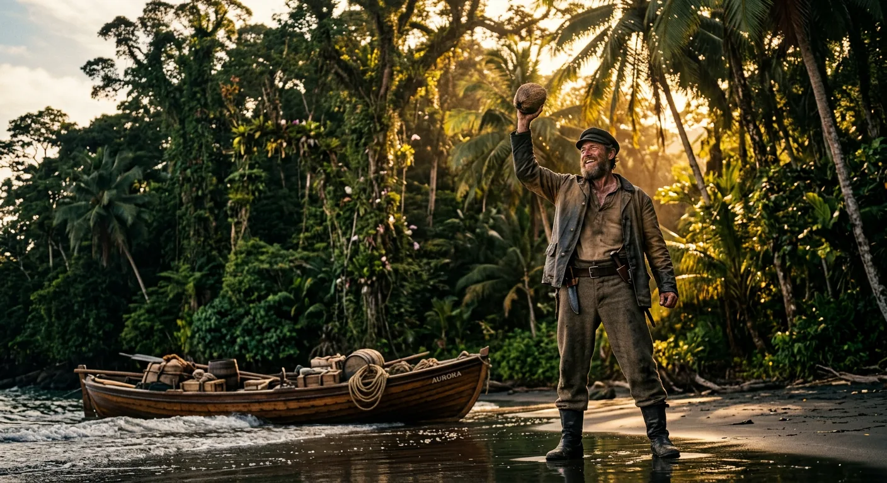
Tropical Bounty and Forest Treasures
The sensation of solid ground beneath their feet struck with unexpected force. Though Captain Nemo had termed them "passengers" aboard the *Nautilus* scarcely two months prior, the Professor well understood the distinction between that diplomatic designation and their actual condition—that of prisoners, whose iron-clad vessel had become as much a cell as a conveyance. Yet here, within musket-shot of an island coastline, the Canadian Ned Land pressed his boots into the earth with the proprietary satisfaction of a conquistador claiming new territories.
The island presented itself magnificently, a verdant curtain of forests concealing the horizon entire. Trees of prodigious height—some two hundred feet from root to crown—stood festooned with natural hammocks of bindweed, whilst beneath their canopy flourished the botanical treasures of Papuan flora: orchids, ferns, and leguminous specimens of considerable scientific interest. The Canadian, however, possessed appetites rather more practical than taxonomical. Abandoning the agreeable for the useful with characteristic directness, Ned located a coconut palm and proceeded to harvest its fruit with efficient brutality. The milk and meat they consumed with a satisfaction that constituted, in its way, a protest against the monotonous provisions of their submarine existence.
Yet the Professor counselled prudence—coconuts being commendable, certainly, but vegetables and game promising still greater utility. Thus began their systematic reconnaissance of the island's resources, during which Ned's macabre jests regarding cannibalism provided Conseil considerable unease about their shared sleeping arrangements. Their explorations yielded the invaluable breadfruit tree, whose roasted flesh Ned transformed into a species of delicate pastry that the Professor pronounced excellent. Cabbage-palms, Malay beans, and yams of superior quality completed their botanical harvest.
The following morning found the *Nautilus* seemingly deserted, silent as a tomb, prompting a second expedition focused upon the hunt. Ned Land's long limbs carried him westward across torrents and prairie until they reached forests alive with winged creatures—parrots of insufficient edibility, grave cockatoos contemplating philosophy, and the magnificent birds of paradise whose undulating flight and brilliant plumage defied successful marksmanship. Counsel, demonstrating unexpected prowess, secured breakfast through a fortunate double shot, bringing down pigeons whose nutmeg-flavored flesh proved delicious.
Fortune smiled most generously upon the party that afternoon. Conseil captured a specimen of the rare "large emerald bird"—a bird of paradise measuring three feet in length, rendered docile through intoxication upon nutmegs, its plumage a symphony of yellow, purple, emerald, and chestnut that justified the native appellation "bird of the sun." The Canadian, meanwhile, vindicated his reputation with an electric ball that felled a magnificent hog, followed by a dozen kangaroo rabbits roused from the bushes.
By evening, their boat laden with provisions, the hunters prepared a feast upon the shore—grilled pork perfuming the air, pigeons and sago pasty and tropical fruits accompanied by fermented coconut liquor. The satisfaction of solid ground, adequate nourishment, and temporary liberty produced dangerous thoughts in the companions' minds.
"Suppose we do not return to the *Nautilus* this evening?" Conseil ventured.
"Suppose we never return?" Ned Land added, his meaning unmistakable.
But before the harpooner could elaborate upon this seditious proposition, a stone fell at their feet—an interruption whose implications would demand immediate and careful consideration.
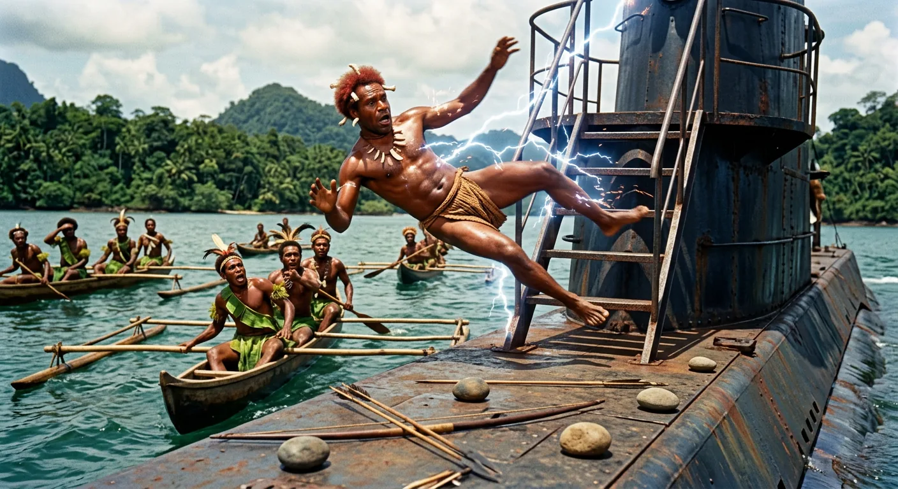
Savages at the Shore
The tranquility of a hunting expedition dissolved in an instant when stones, hurled with alarming precision, interrupted the meal of our three companions—Professor Aronnax, the ever-philosophical Conseil, and the irrepressible Ned Land—sending a savoury pigeon's leg tumbling from Conseil's grasp. What had seemed at first the work of mischievous apes revealed itself to be something altogether more concerning: some twenty Papuan natives, armed with bows and slings, emerged from the copse with unmistakably hostile intent. A hasty retreat ensued, though Ned Land—that stubborn Canadian—refused to abandon his hard-won provisions of pig and kangaroo, managing nonetheless to reach the boat with tolerable speed despite his encumbrances.
Upon returning to the *Nautilus*, which lay deserted and indifferent to their plight, the Professor discovered Captain Nemo lost in musical reverie at his organ, fingers dancing exclusively upon the black keys in melodies of distinctly Scotch character. When informed of the hundred savages gathering upon the shore, the Captain responded with that maddening inscrutability so characteristic of his nature, dismissing the threat with ironical observations upon the universality of savagery and the impregnability of his vessel. His confidence proved contagious; the Professor passed the tropical night in contemplation of zodiacal stars, his thoughts wandering homeward to France while fires flickered upon the beach.
By morning, the native assembly had swelled to five or six hundred souls—true Papuans of athletic figure, with woolly reddish-tinged hair, their bodies adorned with bone chaplets and vegetable garments, their hands clutching bows, arrows, and those round stones they wielded with such devastating accuracy. The Professor observed them with scientific detachment, noting even a "mado" of apparent high rank draped in banana-leaves of brilliant colours. Yet he refrained from violence, believing it proper for Europeans to parry rather than attack.
The day brought an unexpected treasure amid the catalogue of midas-ears, harps, and sea-slugs drawn from those limpid waters: a left-handed olive shell, that rarest of specimens for which collectors would pay its weight in gold. But fortune proved cruel—a native's stone shattered the precious object in Conseil's hand, provoking the faithful servant to discharge his weapon in retaliation, striking only the savage's bracelet of amulets. The Professor's admonishment that no shell merits the cost of human life fell upon ears deaf with indignation.
The situation deteriorated as a score of canoes—those narrow craft balanced upon bamboo poles—encircled the *Nautilus*, their paddlers growing bold before this strange iron cylinder without masts or chimneys. Arrows rained upon the vessel's hull. Yet Captain Nemo, discovered deep in algebraical calculations of *x* and other quantities, received news of the siege with remarkable equanimity. He sealed the hatches, compared the natives' assault to ants crawling upon a battery, and spoke movingly of Dumont d'Urville, that great French navigator who survived icebergs and cannibals only to perish in a railway accident.
The crisis reached its crescendo when, at precisely twenty-five minutes to three on the ninth of January, the hatches opened to renew the vessel's air. Papuan faces appeared, horrible with rage—but the first native to grasp the stair-rail was thrown backward by an invisible force, his cries mingling with those of ten companions who shared his fate. Even Ned Land, seized by violent instinct, found himself overthrown, swearing he had been struck by a thunderbolt. The mystery resolved itself: Captain Nemo had electrified the metallic cable, stretching between himself and his assailants a network none could pass with impunity.
As the paralysed Papuans retreated in terror and the company rubbed the unfortunate Canadian's bruised dignity, the *Nautilus*—lifted by the final waves of the tide at the exact fortieth minute the Captain had predicted—quit her coral bed and swept majestically through the dangerous passes of Torres Strait, leaving behind an island of bewildered savages and carrying forward into open waters whatever mysteries yet awaited beneath the sea.
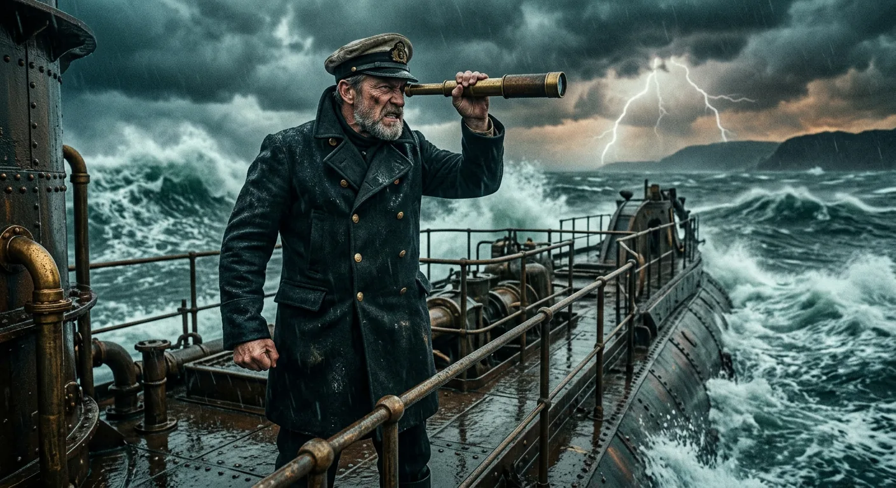
Drifting Through Phosphorescent Seas
On the tenth of January, the *Nautilus* carved her westward course between waters at a velocity I could scarcely credit—some thirty-five miles an hour, her screw revolving with such furious rapidity as to defy enumeration. My contemplation of this marvellous electric agent, which afforded motion, heat, and illumination whilst simultaneously transforming our vessel into an inviolable ark against all external assault, swelled into unbounded admiration—not merely for the mechanism itself, but for the singular genius who had conjured it into existence.
We doubled Cape Wessel, navigated the reef-strewn approaches to the Gulf of Carpentaria with charts of extreme precision, and by the thirteenth found ourselves in the Sea of Timor. Thence Captain Nemo inclined our course south-westward toward the Indian Ocean, though to what ultimate destination remained shrouded in mystery. Would he approach the inhabited coasts of Asia or Europe? Improbable conjectures for a man who fled all continents. Perhaps the Antarctic pole beckoned, or a return to the free Pacific—time alone would reveal his intent.
On the fourteenth, having skirted the final sandy outposts where solid wrestled against liquid, we lost sight of land altogether, and the *Nautilus* adopted an irregular course, now swimming through ocean depths, now floating upon the surface. Captain Nemo occupied himself with temperature experiments of remarkable ingenuity, personally descending to test the thermal variations at depths reaching ten thousand yards—investigations that established the sea's average temperature at four and a half degrees throughout all latitudes at five thousand fathoms.
Yet nature herself soon furnished spectacles surpassing any scientific observation. On the sixteenth, with our vessel becalmed and drifting, we witnessed a phenomenon of extraordinary magnificence: the *Nautilus* floated amid phosphorescent waters so dazzling as to transform the obscurity into living light. Myriads of luminous animalculae—veritable globules of jelly, twenty-five thousand countable in two cubic half-inches—painted our hull with their brilliance whilst porpoises, swordfish, and countless lesser creatures disported themselves like salamanders in fire that burns not. The enchantment was complete; the days dissolved unmarked, and we thought no longer of terrestrial existence.
But on the eighteenth of January, this reverie shattered. A threatening sky, rough seas, and falling barometer heralded some disturbance, yet it was not the storm that commanded my attention. Upon the platform, I observed Captain Nemo fixed upon the horizon through his glass, exchanging urgent words with his lieutenant—the latter visibly agitated, the Captain coldly imperious. When I raised my own telescope to discern the object of their scrutiny, Nemo snatched it violently from my hands. His countenance was utterly transfigured: eyes flashing with sullen fury, teeth set, fists clenched, his whole frame pervaded by violent agitation directed at some impenetrable point upon the horizon.
Without explanation, Captain Nemo commanded that my companions and I be confined until he saw fit to release us. No questions permitted, no appeal possible. Four crewmen escorted us to that same cell where we had passed our first night aboard. Food was brought—ship's fare only—and we ate in silence, puzzling over our captor's inexplicable terror. Then the luminous globe extinguished, plunging us into darkness. Ned succumbed to sleep almost immediately, and Conseil followed into heavy slumber. Only then did I recognise the dreadful truth: soporific substances had been administered in our meal. My eyelids fell like leaden caps; my limbs stiffened with mortal cold; morbid hallucinations seized my consciousness. The undulations of the sea ceased, suggesting we had descended into motionless depths.
Whatever secret Captain Nemo meant to conceal from us, whatever vision upon that horizon had so violently transfigured him, the answer would have to wait—for now, all awareness dissolved into complete and utter insensibility.
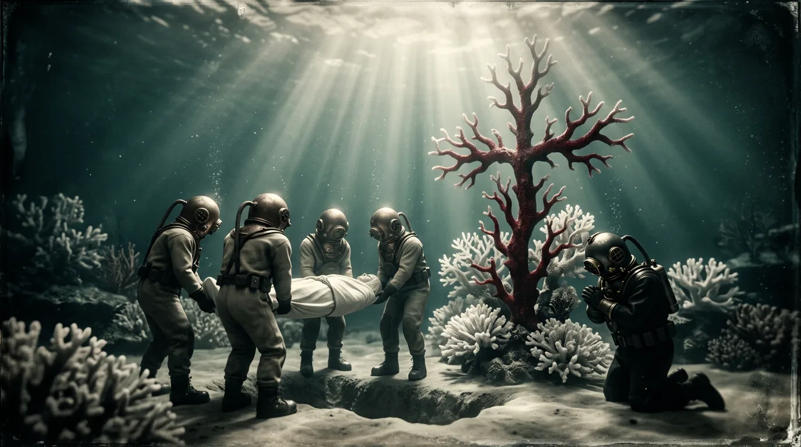
Death and Tears Beneath the Waves
Upon waking the following morning, Professor Aronnax found his faculties restored to singular clarity, though the circumstances by which he had returned to his own cabin remained shrouded in complete obscurity. His companions, Ned Land and Conseil, proved equally ignorant of the night's mysterious proceedings, having themselves awakened in their quarters with no recollection of being conveyed thither. The *Nautilus* maintained its habitual air of inscrutable calm, floating at moderate pace upon the surface, betraying nothing of whatever strange events had transpired in those dark hours.
Captain Nemo, conspicuously absent throughout the morning, finally appeared in the drawing-room where Aronnax busied himself with his notes. The Professor observed with keen interest that the Captain's countenance bore unmistakable marks of fatigue and sorrow—his heavy eyes unrested, his manner restless and troubled as he paced the chamber with evident unease. When at last he spoke, it was to pose an unexpected inquiry: whether Aronnax had medical training. Upon learning that the Professor had indeed practiced as a doctor and resident surgeon before joining the museum, Captain Nemo requested that he attend to a wounded crew member, leading him to a cabin near the sailors' quarters.
There lay a man of perhaps forty years, bearing the resolute features of an Anglo-Saxon, his head swathed in blood-soaked bandages. The wound beneath proved grievous beyond remedy—the skull shattered, the brain exposed and severely injured, clots of blood forming in the bruised and broken mass like the dregs of wine. The Professor's examination confirmed what his practiced eye already suspected: death would claim the man within two hours, and no earthly intervention could forestall it. When pressed for the wound's cause, Captain Nemo replied evasively, attributing it to a mechanical accident, though such explanation strained credulity. Most remarkably, tears glistened in the Captain's eyes—those eyes which Aronnax had thought incapable of shedding any.
The following morning brought an invitation to a submarine excursion, which the three companions accepted. Descending thirty feet to the ocean floor, they entered a realm of extraordinary wonder: the coral kingdom. Here flourished living flowers of the zoophyte, their delicate tentacles trembling beneath the undulating waters, their white petals retreating into crimson cases at the slightest approach. The specimens rivaled the finest Mediterranean coral, their tints justifying such poetical names as "Flower of Blood" and "Froth of Blood."
Deeper they descended, through galleries of fantastic architecture, past petrified thickets and mineral forests, until at three hundred yards they reached the extreme limit of coral formation. In a vast glade surrounded by submarine foliage, the procession halted. Four crew members bore an oblong shape upon their shoulders, and upon the ground Aronnax perceived slight excrescences arranged with deliberate regularity—the unmistakable markers of human graves. Before a coral cross extending arms like petrified blood, a grave was dug with pickaxe strokes that rang against buried flint, and the body, wrapped in white linen, was lowered into its damp resting place.
Captain Nemo and his men knelt in prayer, extended their hands in final adieu, then returned through the coral forest to the *Nautilus*. On the platform afterward, the Captain spoke with profound emotion of this cemetery beyond the reach of predators: "Yes, sir, of sharks and men," he replied gravely when Aronnax remarked upon the peaceful isolation of the dead—a pronouncement weighted with bitter experience and deliberate exile from the world above.
Yet the mysteries of the *Nautilus* and her enigmatic commander were far from exhausted, and the Professor sensed that deeper revelations awaited in the leagues of ocean still to be traversed.
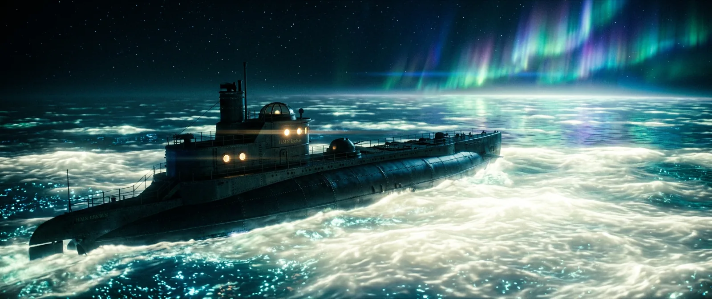
Mysteries of the Deep Waters
Thus begins the second act of our extraordinary voyage beneath the waves, that long submersion which commenced in the shadow of the coral cemetery—a scene whose solemn beauty had impressed itself upon my mind with such peculiar force that I found myself returning to it in quiet moments, as one returns to a half-understood premonition. Captain Nemo had prepared his grave there, in one of the ocean's deepest abysses, where neither monster nor man might disturb the eternal repose of his crew, those companions bound to one another in death as they had been in life. And yet his words haunted me still: *"Nor any man, either."* What fierce, implacable defiance toward human society those words contained!
My companion Conseil persisted in his charitable interpretation of our enigmatic host, viewing the Commander as one of those misunderstood *savants* who, weary of terrestrial disappointments, had sought refuge in this inaccessible medium where he might pursue his instincts unimpeded. But I could no longer content myself with such benevolent theorizing. The mystery of that recent night—when we had been confined like prisoners, when the Captain had so violently snatched the spyglass from my hands, when some unaccountable collision had produced a mortal wound in one of his men—all these incidents set me upon a darker track. No; Captain Nemo's formidable apparatus served not merely his love of freedom, but perhaps also the design of some terrible retaliation, the nature of which remained shrouded in impenetrable darkness.
On the 24th of January, 1868, I mounted the platform to observe the second officer taking the sun's altitude with his sextant—a man who appeared utterly deaf to my French remarks, remaining undisturbed and dumb throughout the operation. Meanwhile, I examined the electric lantern's ingenious construction, its lenticular rings concentrating the luminous arc with remarkable efficiency, the lamp produced in vacuo to ensure steadiness while economizing the irreplaceable graphite points. When the *Nautilus* resumed her westward course, we entered fully into the Indian Ocean—that vast liquid plain encompassing one billion two hundred million acres, its waters so crystalline that gazing upon them induced a species of vertigo.
The days passed agreeably enough for one possessed, as I am, of a profound love for the sea. Daily constitutionals upon the platform, the perpetual spectacle of marine life through the saloon windows, the consolations of the library, and the compilation of these very memoirs preserved me from tedium. We observed magnificent albatrosses uttering their discordant, ass-like cries, and encountered such a profusion of fish—ostracions armored like tortoises, sea-pigs with their strange gruntings, porcupine-like diodons, and chaetodons that shoot insects from their tubular muzzles like living air-guns—that I must borrow from Conseil's meticulous catalogues to do justice to their variety.
By the 24th we had reached Keeling Island, that coral formation visited by Darwin and Captain Fitzroy, where our nets retrieved precious specimens of delphinulae and curious mollusca. Our course then turned northwest toward the Indian Peninsula, descending at times to considerable depths, though never approaching the seven thousand fathoms that mark this ocean's profoundest reaches. On the 26th, crossing the equator, we entered waters made treacherous by formidable sharks—cestracio philippi with their eleven rows of teeth, Isabella sharks, and enormous tiger-sharks nearly six yards in length, whose violence against our windows drove Ned Land to paroxysms of harpooning enthusiasm.
Most forbidding of all was the spectacle encountered at the mouth of the Bay of Bengal: dead bodies floating seaward from the Ganges, those whom the vultures had failed to claim but whom the sharks obligingly assisted in their funeral work. Yet that same evening brought wonder rather than horror, as the *Nautilus* sailed through a sea transformed to milk—a phenomenon caused, as I explained to the astonished Conseil, by myriads of luminous infusoria stretching across leagues of ocean, their gelatinous bodies imparting that ghostly whiteness which lingered upon the horizon like the vague glimmerings of an aurora borealis long after midnight had restored the waters to their customary hue.
And so we pressed onward through those mysterious Indian waters, toward whatever revelations—or catastrophes—awaited us in the chapters yet to unfold.
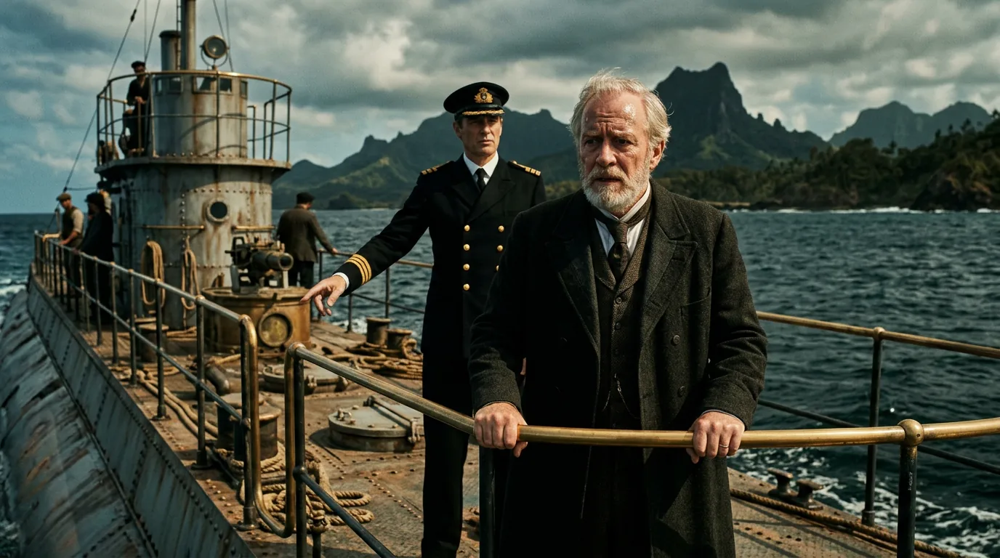
The Pearl Fisheries of Ceylon
On the twenty-eighth of February, when the *Nautilus* rose to greet the midday sun in those tropical waters some nine degrees north latitude, Professor Aronnax found himself gazing upon a sight most welcome to any man long confined beneath the waves—land, visible some eight miles to the westward. A capricious range of mountains, rising perhaps two thousand feet into the humid air, announced the proximity of Ceylon, that lustrous island which the Professor poetically observed hangs like a pearl from the lobe of the Indian Peninsula. The metaphor would prove most apt, for Captain Nemo had designs upon pearls indeed.
The enigmatic commander appeared upon deck with his silent second and, after consulting his charts with characteristic inscrutability, extended an invitation that seemed, upon its surface, entirely agreeable. Would Monsieur Aronnax care to visit the celebrated pearl fisheries of the Gulf of Manaar? The Professor assented readily enough, whereupon the Captain added, with a casualness that belied the gravity of his words, a single inquiry regarding sharks. The question landed upon Aronnax's nerves with all the delicacy of a cannonball. He confessed himself unacquainted with such fish, to which Nemo replied that familiarity would come in time, and that they should be armed, and that the hunting of sharks might prove interesting sport. Having thus proposed mortal peril as though suggesting an afternoon stroll, the Captain departed.
Left alone with his mounting dread, the Professor engaged in a bout of philosophical reflection upon the relative merits of hunting various dangerous creatures. Bears in Switzerland, lions upon the Atlas plains, tigers in Indian jungles—all these seemed preferable to confronting sharks in their own submarine domain. Cold perspiration gathered upon his brow as he recalled that even the natives of the Andaman Islands, who attacked sharks with nothing more than daggers and nooses, rarely returned from such encounters with their lives intact.
Into this atmosphere of suppressed terror entered Conseil and Ned Land, both displaying a cheerfulness that suggested profound ignorance of what awaited them. The Canadian harpooner spoke warmly of Captain Nemo's pleasant invitation, and Conseil praised the commander's gentlemanly conduct, neither man yet comprehending the perilous addendum regarding sharks. Seeking perhaps to postpone the inevitable revelation, Aronnax diverted their attention toward a scholarly discourse upon pearls—those tears of the sea to the poet, drops of solidified dew to the Oriental, and morbid secretions of bivalve molluscs to the naturalist.
The Professor expounded at length upon the pearl-oyster, the *meleagrina margaritifera*, and the nacreous formations deposited in concentric layers around some kernel of sand or barren egg. He described virgin pearls and paragons, the methods of extraction, the gradations of value according to size, shape, water, and lustre. So absorbed did he become in this disquisition that he committed a Freudian slip of considerable magnitude, claiming one oyster had contained a hundred and fifty sharks rather than pearls—a substitution that revealed much about the true direction of his thoughts.
When at last the conversation turned toward the question of danger, and Aronnax attempted Nemo's careless tone in asking whether brave Ned feared sharks, the Canadian dismissed such concerns with professional hauteur. But when the Professor clarified that they would not be fishing from the safety of a vessel but rather confronting the ill-fashioned beasts in the water itself, even Land's bravado showed strain. As for Conseil, that faithful servant declared with characteristic devotion that wherever his master went, he would follow.
Thus stood the three companions upon the eve of their submarine expedition—one paralyzed by trepidation, one sustained by professional pride, and one animated by unwavering loyalty—all preparing to descend into waters where creatures of considerable menace awaited their arrival.
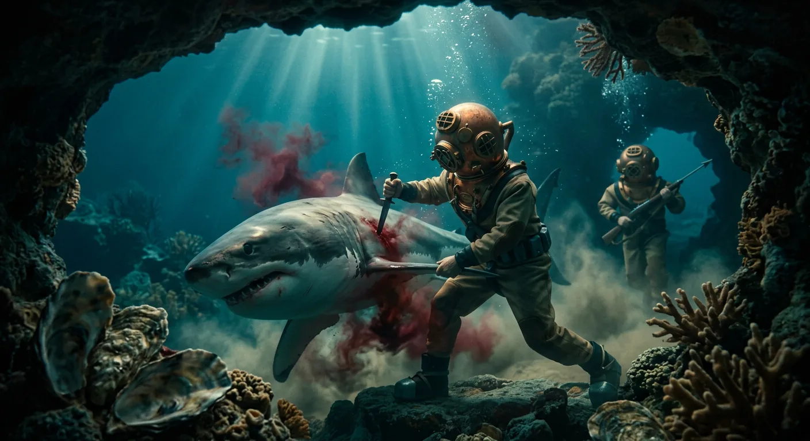
Dangers of the Pearl Beds
Before dawn had properly surrendered to morning, Professor Aronnax found himself roused from slumber at that peculiar hour of four o'clock when the world hangs suspended between darkness and light. Captain Nemo awaited him in the saloon with characteristic economy of explanation, and soon the Professor, accompanied by the ever-faithful Conseil and the restless Canadian Ned Land, found themselves descending to a boat where five sailors of the *Nautilus* sat ready at their oars. The submarine vessel had positioned herself off the western coast of Ceylon, near that celebrated bay formed by the mainland and the Island of Manaar—beneath whose dark waters stretched the legendary pintadine bank, an inexhaustible treasury of pearls extending some twenty miles in length.
Through the predawn obscurity they rowed southward with measured naval precision, each stroke falling at ten-second intervals, until the tropical sun performed its characteristic theatrical entrance—that sudden illumination peculiar to equatorial regions which knows neither the gentle gradation of dawn nor the lingering farewell of twilight. At scarcely a yard's depth they anchored above one of the bank's highest points, and there Captain Nemo disclosed his intentions: they would walk beneath these waters where, within a month, fishing boats would converge and divers would ransack these oyster beds with characteristic human boldness.
The party donned their india-rubber suits and copper helmets, though Captain Nemo dismissed the Ruhmkorff electrical apparatus as unnecessary—indeed, imprudent—in waters where such brilliancy might attract dangerous inhabitants most inopportunely. When Aronnax inquired after firearms, the Captain responded with that philosophical practicality which marked his character: mountaineers attack bears with daggers, and steel proves surer than lead. Thus armed with blades—and Ned Land with his beloved harpoon—they descended into a submarine world of extraordinary richness.
The ocean floor revealed itself as a naturalist's paradise: Javanese fish resembling golden-striped serpents, brilliant stromateus carrying dorsal fins like scythes, tranquebars armoured in longitudinal plates, and magnificent oculine fans forming the richest vegetations of those seas. Through this living tapestry they proceeded until they surveyed the oyster-banks themselves—millions upon millions of pearl-oysters representing Nature's creative power, that force which so magnificently exceeds man's instinct of destruction.
Yet Captain Nemo pressed onward through paths known only to himself, until they entered a grotto of sublime architecture—natural pillars supporting capricious arches like heavy Tuscan columns. Within this submarine crypt lay the Captain's true objective: a tridacne of monstrous dimensions, a goblet-shaped mollusc exceeding two and a half yards in breadth. Inserting his dagger to prevent the shells from closing, Nemo revealed his treasure—a pearl the size of a coconut, globular in shape, perfect in clearness, admirable in lustre. When Aronnax reached instinctively to seize this jewel, the Captain stopped him; he understood then that Nemo was cultivating this pearl, allowing each year's secretions to add new concentric circles to a gem already valued at half a million pounds sterling.
Their return journey brought unexpected drama when, concealed in a rocky fracture, they observed an Indian pearl-diver at his dangerous work—a poor devil gleaning before the official harvest, descending with nothing but a sugar-loaf stone between his feet. The spectacle turned to horror when a shark of enormous size descended upon the unfortunate man, its tail-blow felling him to the ocean floor. In that terrible moment, Captain Nemo rose and advanced upon the monster with only his dagger, engaging in combat of such fury that the waters rocked and churned with blood. When the creature's mass threatened to crush the Captain beneath its weight, Ned Land—that same Ned Land who had yearned so desperately to escape this man—rushed forward with his harpoon and delivered the fatal blow.
They bore the unconscious Indian to the surface, where the Captain's ministrations gradually restored him to consciousness. The diver's terror upon awakening to find four copper-helmeted figures leaning over him transformed to astonishment when Nemo pressed into his trembling hand a bag of pearls—munificent charity from the man of the waters to a poor Cingalese who knew not to what superhuman beings he owed both fortune and life.
Aboard the *Nautilus* once more, Captain Nemo addressed the Canadian with simple gravity: "Thank you, Master Land." The harpooner's reply carried equal weight: "It was in revenge, Captain. I owed you that." A ghastly smile crossed Nemo's lips—and that was all. Yet when Aronnax reflected upon the day's events and observed that the Captain had not entirely succeeded in crushing his heart, Nemo's response revealed depths yet unfathomed: "That Indian, sir, is an inhabitant of an oppressed country; and I am still, and shall be, to my last breath, one of them!"
This declaration hung in the air between them, promising revelations yet to come concerning the mysterious captain's true history and the nature of his self-imposed exile beneath the waves.
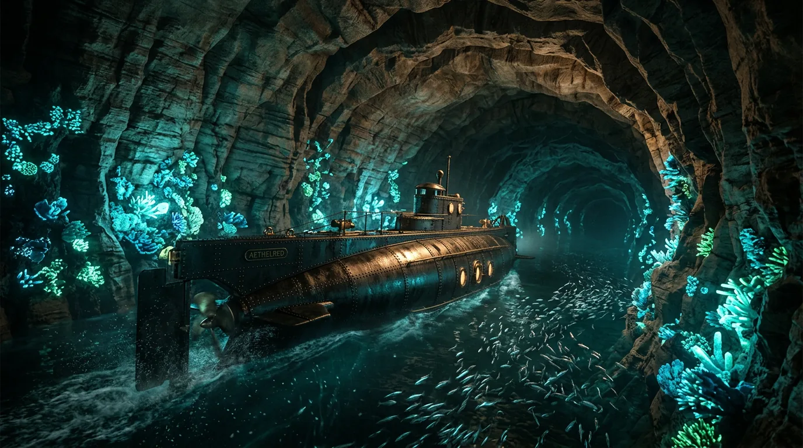
Passage Through Ancient Waters
On the twenty-ninth of January, as Ceylon dissolved beneath the horizon's edge, the *Nautilus* threaded its course at twenty miles per hour through that intricate labyrinth of channels separating the Maldives from the Laccadives, coasting past the Island of Kiltan—that coral-born land first sighted by Vasco da Gama in 1499, one of nineteen principal islands scattered between precise coordinates of latitude and longitude. By this juncture, the vessel had traversed some 16,220 miles, or 7,500 French leagues, from its departure point in Japanese waters.
The following day brought no land to sight, the *Nautilus* steering north-northeast toward the Sea of Oman, that watery vestibule between Arabia and the Indian Peninsula serving as antechamber to the Persian Gulf. Here the Canadian harpooner, Ned Land, confronted the narrator with characteristic impatience regarding their destination—for the Persian Gulf, he reasoned, offered no egress, and the Red Sea beyond remained similarly landlocked, the Isthmus of Suez standing unconquered. Yet the narrator, having long since surrendered to Captain Nemo's inscrutable purposes, could only observe that while Ned grew weary of submarine wonders, he himself would mourn the voyage's eventual conclusion.
For four days the *Nautilus* wandered the Sea of Oman with apparent aimlessness before the travelers caught fleeting glimpse of Muscat, its white houses and rounded mosque domes standing in relief against black rocks—a vision swiftly submerged. The vessel traced the Arabian coast of Mahrah and Hadramaut, passed through the Gulf of Aden, and on the seventh of February entered the Straits of Bab-el-mandeb, whose Arabic name translates ominously as "The Gate of Tears." The narrow passage, crowded with English and French steamers plying routes between Suez, Bombay, and distant Melbourne, compelled the *Nautilus* to travel prudently submerged until, at noon, they emerged into Red Sea waters.
Here the submarine's pace slackened, alternating between surface and depth, permitting observation of spectacular coral formations and volcanic islands along the Libyan and Tehama coasts. On the ninth of February, Captain Nemo ascended to the platform where the narrator awaited, and a remarkable conversation ensued—ranging from ancient historians' fearful accounts of Red Sea navigation to the etymology of its sanguine name, which Nemo attributed to the Hebrew "Edom" and the presence of microscopic seaweed capable of rendering entire bays blood-red.
Most significantly, their discourse turned to the Suez Canal then under construction by Ferdinand de Lesseps, whom Nemo praised with unexpected fervor as bringing more honor to France than any military captain. Yet when the narrator expressed astonishment at Nemo's promise to reach the Mediterranean within two days—impossible without circumnavigating Africa—the Captain revealed his extraordinary secret: a subterranean passage beneath the isthmus itself, which he had named the Arabian Tunnel. Discovered through careful reasoning and confirmed by tagging fish caught near Suez and later recovered on Syrian coasts, this natural corridor would convey them from the Red Sea to the Gulf of Pelusium, accomplishing in hours what surface vessels required weeks to achieve.
Thus, with the revelation of yet another marvel concealed within the earth's geography, the *Nautilus* prepared to thread a passage that Nature had carved long before human engineers dreamed of conquering the isthmus above.
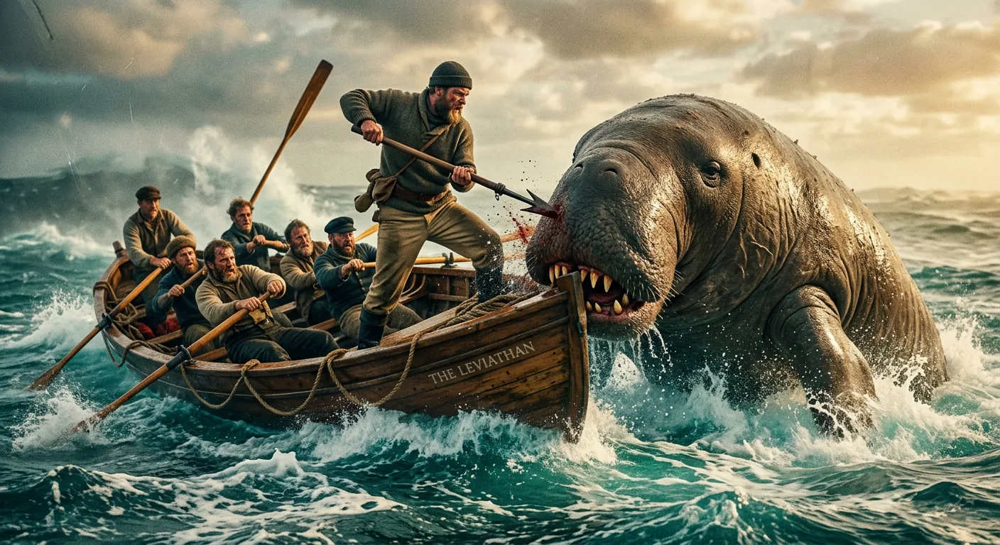
The Dugong Hunt in the Red Sea
On the evening of their approach to the Arabian coast, the *Nautilus* rose to the surface in latitude 21° 30' North, affording Professor Aronnax a memorable view of Djeddah—that considerable emporium serving as the commercial crossroads of Egypt, Syria, Turkey, and India. The dying sun illuminated the whitewashed buildings of the port, whilst wooden cabins and reed dwellings marked the Bedouin quarter beyond. Soon enough, night drew its veil across the scene, and the vessel descended into phosphorescent waters.
The following day brought an encounter of rather more visceral excitement. With the sea deserted at noon and the *Nautilus* risen to her waterline, Aronnax, Conseil, and the Canadian harpooner Ned Land stationed themselves upon the platform. It was Land's keen eyes that first detected the disturbance—a dark mass moving upon the distant waves, which resolved itself into a dugong of truly colossal proportions, measuring more than seven yards in length. The sight awakened in the Canadian all the fierce instincts of his former trade, and Captain Nemo, perceiving this professional hunger, granted him permission to pursue the creature, though not without the sardonic observation that it would be ill-advised to miss.
What followed was a hunt of considerable duration and mounting peril. The pinnace was lowered, six oarsmen bent to their work, and the party drew within striking distance of the sleeping cetacean. Land's first throw, though powerful, succeeded only in wounding the beast without securing it. For an hour the dugong led them on a chase of maddening near-misses, surfacing to breathe before plunging beyond reach. At last, possessed by what Aronnax termed a "perverse idea of vengeance," the creature turned upon its pursuers with terrible force. It struck the pinnace sideways, nearly capsizing her and shipping two tons of water, its formidable teeth buried in the gunwale as it lifted the boat from the sea. Only Land's relentless harpooning, driving the weapon at last into the animal's heart, preserved them from disaster. The dugong, weighing some ten thousand pounds, was hoisted aboard the *Nautilus* by tackle of extraordinary strength.
The vessel's larder was further enriched the following day by flights of Nile sea-swallows and wild ducks of exceptional flavour, taken as the *Nautilus* approached Cape Ras-Mohammed. There, at the extremity of Arabia Petraea, between the gulfs of Suez and Acabah, Aronnax beheld Mount Horeb—that Sinai upon which Moses received his divine revelation—towering against the horizon.
Yet the chapter's most remarkable passage remained ahead. That evening, Captain Nemo conducted Aronnax to the pilot's cage, a cabin of six feet square from which the submarine might be steered through the most treacherous waters. The Captain himself took the helm as the *Nautilus* entered a vast subterranean gallery—the Arabian Tunnel, that secret passage beneath the Isthmus of Suez. The waters of the Red Sea rushed through with tremendous force, carrying the vessel like an arrow towards the Mediterranean whilst her reversed screws laboured against the torrent. In scarcely twenty minutes, the impossible transit was complete.
As Captain Nemo uttered the single word "The Mediterranean," Aronnax could only marvel at this feat of navigation through channels no chart had ever recorded—though what wonders and perils awaited them in those ancient waters, he had yet to discover.
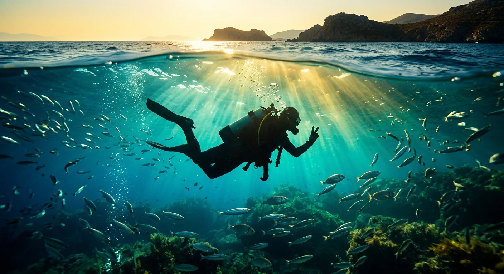
Escape Plans in European Waters
On the twelfth of February, Professor Aronnax ascended to the platform at dawn to discover that the *Nautilus* had accomplished what seemed impossible overnight—the vessel had traversed from one sea to another, depositing her passengers upon the surface of the Mediterranean. The dim outline of Pelusium lay three miles distant to the south, and when Ned Land joined Aronnax with Conseil, the Canadian could scarcely credit that they now floated within sight of the Egyptian coast and the jetty of Port Said, though his practiced eyes soon confirmed the truth of it.
Having entered European waters, the Canadian saw fit to raise what he termed "our own little affair"—the matter of their escape. The three companions withdrew near the lantern, away from prying ears and the spray of the vessel's blades, whereupon Ned declared his fixed intention: before Captain Nemo's caprices might drag them to polar depths or distant Oceania, he meant to quit the *Nautilus* entirely. Aronnax, however, found himself divided in spirit—grateful as he was to Nemo for the unprecedented opportunity to complete his submarine studies and to compose his scientific treatise amid the very element he described, he could not bring himself to abandon such investigation. Yet Ned's logic proved formidable: they stood in the present, in frequented waters, and must seize their advantage rather than gamble upon some hypothetical future occasion in Chinese or American seas.
The professor capitulated to reason, acknowledging that prudence demanded they profit by any first opportunity, for Captain Nemo would never forgive a failed attempt. Ned outlined his scheme with characteristic practicality: on some dark night near a European coast, they might swim for shore, or else commandeer the pinnace, whose operation he understood well enough to manage their flight undetected. Yet Aronnax expressed his private conviction that no such opportunity would arise—Captain Nemo surely perceived their yearnings for liberty and would remain vigilant in these crowded waters.
Indeed, subsequent days confirmed the professor's foresight to Ned's great despair. The *Nautilus* remained submerged for extended periods, surfacing only briefly, her pilot's cage alone visible above the waves. They descended to depths exceeding a thousand fathoms between the Grecian Archipelago and Asia Minor. Near the island of Carpathos—ancient Scarpanto, that storied abode of Proteus—Captain Nemo recited Virgil with evident feeling, though the panels remained sealed, permitting Aronnax no study of the archipelago's fishes.
Off Crete, a more mysterious episode unfolded. A diver appeared in the illuminated waters—one Nicholas of Cape Matapan, known throughout the Cyclades—and exchanged signals with the Captain before ascending to the surface. That same evening, Aronnax witnessed Nemo filling an iron-bound chest with ingots of gold, some four thousand pounds in weight, bearing an address inscribed in Modern Greek. Crewmen hoisted this fortune topside, launched the pinnace, and within hours completed some clandestine delivery upon the continent. The professor retired deeply troubled, his questions unanswered.
The following afternoon brought yet another wonder: the *Nautilus* entered boiling waters near the volcanic island of Santorin, where a submarine eruption heated the sea to intolerable temperatures. Captain Nemo, impassive as ever, discoursed learnedly upon the geological history of these islets—their emergence and submersion across centuries, from Pliny's accounts to recent formations witnessed by the Captain himself. The sea glowed white, then scarlet with iron salts; sulphurous smoke curled about them until the vessel prudently withdrew to breathable air. Aronnax reflected that had Ned chosen these waters for their flight, they should have perished utterly in that furnace.
By the sixteenth of February, the *Nautilus* had departed the deep basin between Rhodes and Alexandria, doubled Cape Matapan, and left the Grecian Archipelago astern—carrying with her the unresolved mysteries of Captain Nemo's gold, his secret correspondents, and the uncertain fate of three captives whose hopes for liberty remained as turbulent as the volcanic seas they had just escaped.
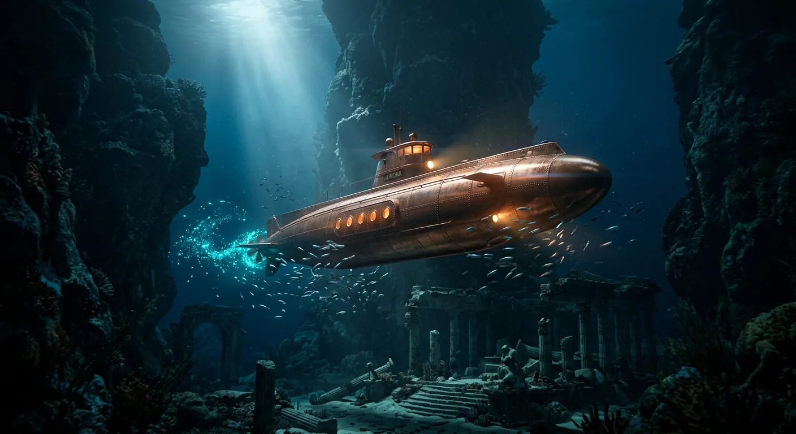
A Swift Passage Through Haunted Waters
The great inland sea—that azure basin which the Hebrews called "the great sea," which the Greeks knew simply as "the sea," and which the Romans claimed as their own *mare nostrum*—lay before the *Nautilus* like a battlefield where the ancient gods Neptune and Pluto might still be observed contesting dominion over the elements. Its shores, fragrant with myrtle and bordered by orange-trees and rugged mountains, its waters saturated with air of crystalline purity yet perpetually agitated by subterranean fires, presented themselves to the narrator's eager scientific gaze. Yet beautiful as this storied basin was, with its two million square yards of surface area, he could manage only the most fleeting observation of its wonders, for the submarine traversed its entirety at such velocity that the passage consumed a mere forty-eight hours.
Captain Nemo, that most enigmatic of commanders, did not appear once during this rapid transit—a circumstance which struck the narrator as particularly telling. It became evident that the Mediterranean, enclosed as it was by the very lands the Captain seemed determined to avoid, proved distasteful to him in ways the open ocean never could. Here, hemmed between the close shores of Africa and Europe, the *Nautilus* could not enjoy that liberty of movement which characterized her voyages through boundless waters. These waves, these breezes, carried upon them memories—perhaps regrets—that the Captain evidently wished to outrun at twenty-five miles per hour.
Such speed rendered any hope of escape quite impossible. Ned Land, whose plans for flight had consumed his thoughts, was forced to abandon them entirely, for one cannot launch a small boat from a vessel traveling at twelve or thirteen yards every second without courting certain destruction. The *Nautilus* surfaced only at night to replenish her air supply, navigating by compass and log alone, so that the narrator perceived no more of this historic sea than a railway passenger glimpses of landscapes flashing past an express train window.
Between Sicily and the Tunisian coast, the seafloor rose dramatically to form an underwater bank scarcely nine fathoms deep, flanked on either side by depths of ninety fathoms. The *Nautilus* maneuvered with considerable care through this submarine passage, prompting a discussion between the narrator and the faithful Conseil regarding the geological history of the Mediterranean—how Africa and Europe had once been joined at this very spot, and how similar barriers had existed at Gibraltar in ages past. When Conseil speculated whether volcanic forces might one day raise these barriers above the waves and trouble Monsieur Lesseps's great canal project, the narrator delivered a sobering lecture on the gradual cooling of the Earth, that slow extinguishing of internal fires which would one day render the planet as cold and lifeless as the moon.
By the early morning hours of the 18th of February, the *Nautilus* had descended into the deepest basin of the Mediterranean and approached the Straits of Gibraltar. Here the vessel took advantage of that lower counter-current—long theorized but only recently proven to exist—which carries the surplus waters of the Mediterranean back into the Atlantic, restoring the equilibrium that evaporation alone cannot maintain. Through this narrow pass the submarine advanced swiftly, affording the narrator one fleeting glimpse of the submerged ruins of the Temple of Hercules before the *Nautilus* emerged at last into the open Atlantic, where new wonders and fresh mysteries awaited.
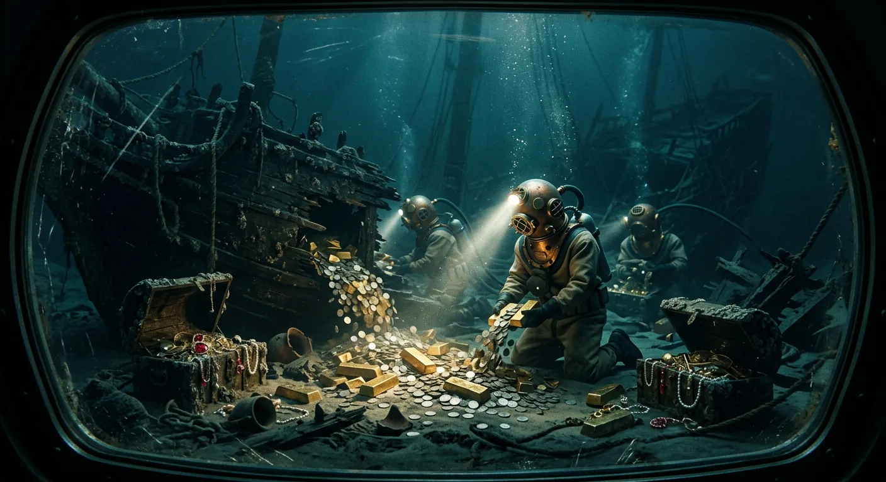
The Escape Plan Takes Shape
The Atlantic stretched before them in all its magnificent immensity—twenty-five millions of square miles of restless water, fed by the greatest rivers of civilization and savagery alike, from the St. Lawrence to the Niger, from the Amazon to the Rhine. Through this vast aquatic dominion the *Nautilus* had pierced with her sharp spur, having accomplished nearly ten thousand leagues in three and a half months, a distance surpassing the great circle of the earth itself. Now, having departed the Straits of Gibraltar, the vessel surfaced once more, and with her return to the waves came the restoration of those daily constitutionals upon the platform.
Yet the weather proved inhospitable in the extreme. Cape St. Vincent loomed some twelve miles distant through the murk, marking the southwestern extremity of the Spanish peninsula, while a fierce southerly gale whipped the sea into violent billows that sent the *Nautilus* rocking perilously. The three companions—Aronnax, the harpooner Ned Land, and the ever-faithful Conseil—descended after only brief gulps of fresh air, driven below by waves that crashed perpetually across the platform.
It was then that Ned Land revealed his hand. Following Aronnax to his cabin with unmistakable preoccupation, the Canadian announced with compressed lips and frowning brow that the moment of escape had arrived. That very night, at nine o'clock precisely, they would make their attempt. The conditions, he insisted, favoured them: cloudy skies, free-blowing wind, the Spanish coast but a few miles distant, and Captain Nemo certain to be sequestered in his quarters. The canoe stood ready with oars, mast, sail, and provisions; an English wrench had been procured to unfasten the bolts securing it to the *Nautilus*' shell.
Aronnax found himself torn between the desire to reclaim his liberty and the profound reluctance to abandon his submarine studies incomplete—to leave behind forever the wonders he had witnessed, the masterpieces of art and nature concentrated in that floating museum. What hours of agitation he passed, counting minutes with unbearable impatience, questioning whether some unforeseen circumstance might yet prevent the realization of Ned Land's project! He wandered through the saloon like a man on the eve of eternal exile, dressed himself warmly in sea boots, otterskin cap, and sealskin-lined coat, then waited in mortal dread for the appointed signal.
But circumstance intervened in unexpected form. The screw fell silent, the *Nautilus* settled upon the ocean floor, and Captain Nemo himself appeared with a most curious request: did M. Aronnax know the history of Spain? What followed was a masterful lesson concerning the events of 1702, when Spanish galleons laden with American gold and silver had been scuttled in Vigo Bay rather than surrender their treasure to English forces. And there, through the transparent glass of the saloon, Aronnax beheld the explanation illuminated in electric light—the *Nautilus* crew in diving-dresses, extracting ingots of gold and silver, cascades of piastres and jewels, from the blackened wrecks that littered the sandy bottom.
Here was the source of Captain Nemo's millions, heir direct to treasures torn from the Incas and the conquered of Cortez. Yet when Aronnax suggested these riches might prove barren, Nemo's response came with unexpected animation—an impassioned declaration that these treasures served suffering beings and oppressed races, victims to be avenged, miserable creatures to be consoled. In that moment of unguarded emotion, Aronnax understood at last for whom those millions were destined, and the escape attempt faded into the shadows of more pressing mysteries yet to unfold.
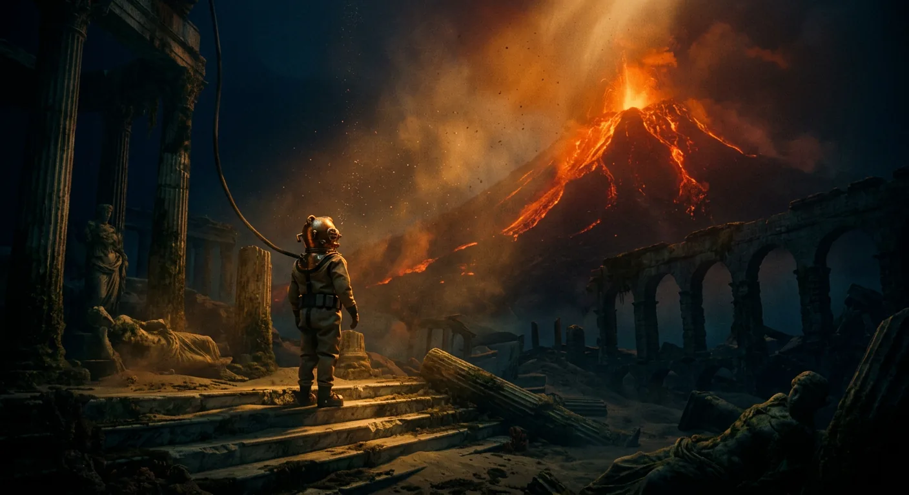
The Atlantic's Sunken Secrets
The morning of the nineteenth of February brought Ned Land into my cabin with the expression of a man sorely disappointed by fate's capricious timing. Fortune, as I reminded him, had turned against our escape the previous evening—Captain Nemo had anchored precisely at the hour we had intended to abandon his vessel, detained by business at what I termed his "banking-house": the ocean itself, where his riches lay safer than in any vault of state. My recounting of the night's incidents at Vigo Bay served only to deepen the Canadian's regret that he had not personally traversed that submerged battlefield. Yet Ned remained undaunted, declaring the setback merely "a blow of the harpoon lost," and promising success at the next opportunity.
The compass, however, offered no reassurance. The *Nautilus* held a course south-southwest, turning her stern resolutely toward Europe. When we surfaced near midday, nothing greeted our eyes but an immense expanse of sea, scattered sails bound for San Roque, and gathering clouds promising foul weather. Ned strained to pierce the fog, hoping still for land, but the sun appeared only long enough for the second officer to take his reading before billowing waves drove us below once more. The chart confirmed our imprisonment: 150 leagues from the nearest coast, with no conceivable means of flight. I leave the reader to imagine the Canadian's fury—though for myself, I confess I felt oddly relieved, lightened of the burden of conspiracy, and able to return with some calmness to my accustomed studies.
That night, around eleven o'clock, Captain Nemo paid me an unexpected visit, inquiring with gracious civility whether I felt fatigued from the previous evening's watch. When I answered in the negative, he proposed what he called "a curious excursion"—an opportunity to explore the submarine depths not by daylight, but in the darkness of night. The way would be tiring, he warned; we should have far to walk and a mountain to climb, the roads poorly kept. Such cautions only heightened my curiosity, and I readily agreed.
We donned our diving apparatus alone—neither Ned, nor Conseil, nor any member of the crew would accompany us. When I noted the absence of electric lamps, the Captain assured me they would be useless. Minutes later, we set foot upon the Atlantic floor at 150 fathoms' depth, midnight approaching. The waters lay profoundly dark, yet in the distance glowed a reddish spot—a brilliant fire burning some two miles distant, inexplicably lighting the liquid mass. As we advanced, I heard rain pattering upon the surface above, and laughed at the absurd notion of getting wet while already submerged in the sea.
The stony ground soon gave way to a forest of petrified trees—dead, leafless, holding by their roots to broken soil like some coal-pit standing beneath the waves. I climbed rocks, strode over fallen trunks, broke through curtains of seaweed, all while following my tireless guide toward the ever-brightening glow. The source proved to be an active volcano, its crater vomiting torrents of lava that cascaded into the depths and illuminated the plain below like an immense torch.
And there, ruined beneath my astonished gaze, lay the remains of a city—temples fallen, columns prostrate, the unmistakable architecture of a lost civilization. Aqueducts, an Acropolis, the outline of what might have been a Parthenon, the traces of an ancient port—a perfect Pompeii swallowed by the sea. When I turned desperately to the Captain for explanation, he silenced me with a gesture, stooped to retrieve a piece of chalk-stone, and traced upon a rock of black basalt the single word: *ATLANTIS*.
The legendary continent of Plato, denied by scholars, dismissed as myth—yet here it lay before me, bearing incontrovertible testimony to its catastrophe. For an hour we stood upon that summit, contemplating the vast drowned plains under the volcano's brilliance, until the moon herself cast pale rays through the water upon the buried land. Captain Nemo remained motionless throughout, seemingly petrified in some profound reverie, perhaps communing with generations long vanished.
At last he rose, cast one final look across the immense plain, and bade me follow him down the mountain and through the mineral forest, until the lantern of the *Nautilus* guided us home just as dawn began to whiten the ocean's surface—leaving me to wonder what other secrets these depths yet concealed.
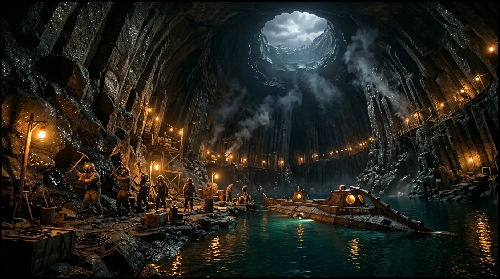
Into the Heart of a Volcano
Professor Aronnax awoke late on the twentieth of February, the fatigues of the preceding night having prolonged his slumber until eleven o'clock, whereupon he hastened to ascertain the *Nautilus*'s heading and found her still coursing southward at twenty miles per hour, some fifty fathoms beneath the Atlantic swells. The waters teemed with remarkable specimens—giant rays of prodigious muscular strength capable of launching themselves above the waves, sharks of sundry varieties including one fearsome creature of fifteen feet whose transparency rendered it nearly invisible, and those bright-hued fish known since Aristotle's time as sea-dragons, their spiny backs making capture a hazardous enterprise.
By four o'clock the seabed transformed from thick mud interspersed with petrified wood to stony ground strewn with basalt and volcanic conglomerate, until presently a towering wall rose before them, blocking the southerly horizon and seeming to mark the very limits of that legendary Atlantis across whose smallest portion they had journeyed. The Professor retired to his cabin with intentions of brief rest, yet awakened to find eight o'clock had arrived, the *Nautilus* floating upon the surface—though surrounded not by daylight but by utter, impenetrable darkness.
Captain Nemo's voice emerged from the blackness to explain their extraordinary circumstance: they had penetrated underground, into the flooded heart of an extinct volcano whose interior the sea had invaded through some ancient convulsion. When the electric lantern blazed to life, it revealed an immense cavern—a lake two miles in diameter, imprisoned within volcanic walls that curved upward into a vaulted funnel some five or six hundred yards high, crowned by a circular orifice admitting the faintest gleam of distant daylight. Here, the Captain declared, lay his harbour of refuge, sheltered from all storms, where no vessel could pursue and no enemy could reach.
Yet this sanctuary served purposes beyond mere concealment. Beneath these waters lay entire forests embedded during geological epochs, now mineralised into coal—an inexhaustible submarine mine from which Nemo's crew, donning diving apparatus and wielding picks and shovels, extracted the combustible necessary to manufacture the sodium that powered the *Nautilus*. The smoke from this process, escaping through the crater above, lent the mountain the appearance of a still-active volcano—a deception as ingenious as it was complete.
The Professor summoned Conseil and Ned Land to explore this remarkable grotto. Conseil accepted their situation with characteristic equanimity, finding it perfectly natural to wake beneath a mountain after sleeping beneath the waves, whilst the Canadian's thoughts turned immediately toward escape, his keen eyes searching for any exit the cavern might afford. Together they traversed sandy shores and volcanic slopes glittering with mica, ascending through conglomerates and trachyte until black basalt formed natural colonnades beneath the immense vault. Vegetation struggled forth from fractures in the rock—sickly euphorbias, drooping heliotropes, and timid violets whose faint perfume delighted the Professor, for sea-flowers, he mused, possess no soul.
The resourceful Ned Land discovered a beehive within a dragon-tree and smoked out several pounds of honey, whilst later, despite lacking firearms, he managed to wound and capture a magnificent bustard by hurling stones with admirable persistence. They gathered marine crystal and observed sparrow hawks, kestrels, and countless crustacea before completing their circuit and returning aboard. The crew had finished loading sodium, yet Captain Nemo issued no immediate order to depart—whether waiting for nightfall to slip away secretly through the submarine passage, none could say.
Whatever his intentions, by the following day the *Nautilus* had departed her volcanic sanctuary and steered clear of all land, gliding once more through the Atlantic depths toward mysteries yet unrevealed.
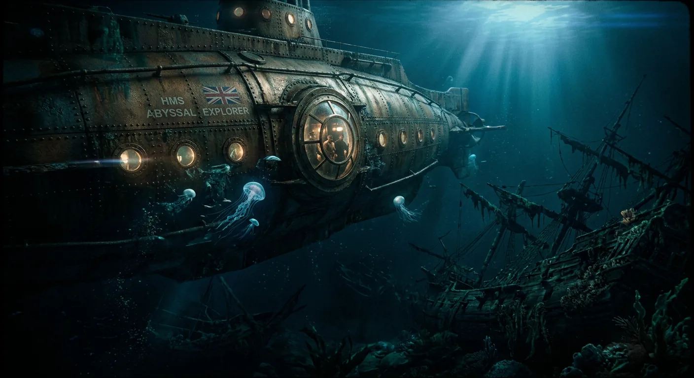
A Meadow in the Atlantic
On that singular day, the *Nautilus* entered one of the Atlantic's most curious dominions—the Sargasso Sea, that strange and tranquil lake suspended within the open ocean, encircled by the warm collar of the Gulf Stream as it bends southward past the Azores, brushes the African coast, and sweeps back toward the Antilles in its great, languorous oval. Here lay a perfect meadow upon the waters, a carpet of seaweed so dense and interwoven that the stem of any ordinary vessel would scarcely tear through its herbaceous mass. Captain Nemo, ever protective of his vessel's mechanisms, kept the *Nautilus* submerged some yards beneath this floating prairie, unwilling to entangle his screw in the kelp that gave this region its Spanish-derived name.
The phenomenon itself invited scientific contemplation: the Sargasso functions as the calm centre of the Atlantic's vast circular currents, much as fragments of cork placed in a rotating vase will congregate at the point of least agitation. Above the *Nautilus* drifted the accumulated flotsam of ages—tree trunks torn from the Andes and Rocky Mountains, borne seaward by the Amazon and Mississippi, alongside countless wrecks encrusted with barnacles and shells, too weighted now to ever rise again. One could not help but consider Maury's prediction that these substances, petrifying over centuries, might one day form inexhaustible coal-mines, a providential reserve against humanity's depletion of continental resources. Among this inextricable tangle, I observed delicate pink halcyons and trailing actiniae, medusae of green, red, and blue—life persisting amid the debris of civilisation.
By the twenty-third of February, the ocean had resumed its accustomed aspect, and for nineteen days the *Nautilus* maintained its steady course through the mid-Atlantic at a hundred leagues per day. Captain Nemo's intentions remained opaque, though I surmised he meant to double Cape Horn and return to Pacific waters—a prospect that filled Ned Land with mounting dread, for these vast, islandless seas offered no opportunity for escape. We remained prisoners of circumstance, able neither to oppose our captor's will by force nor cunning. I permitted myself the hope that persuasion might yet succeed where other means could not; perhaps, upon the voyage's conclusion, Captain Nemo might consent to restore our liberty in exchange for our solemn oath of silence regarding his existence. Yet even this fragile optimism withered upon reflection: had he not declared from the outset that his life's secret demanded our permanent imprisonment? Would not my four months' silence appear a tacit acceptance of our captivity? And might renewed appeals only arouse suspicions fatal to any future opportunity?
The Captain remained largely absent during these weeks, absorbed in work. In the library, I frequently discovered his books left open, particularly those concerning natural history; my own treatise on submarine depths bore his marginal annotations, often contradicting my theories, though he rarely condescended to discuss them directly. At night, the melancholy strains of his organ drifted through the vessel as the *Nautilus* slumbered upon the deserted ocean. We sailed for days upon the surface, the sea seemingly abandoned save for the occasional India-bound vessel making for the Cape of Good Hope; once, a whaler's boats pursued us, mistaking our craft for some profitable leviathan, until Captain Nemo ended the chase by plunging beneath the waves.
On the thirteenth of March, having covered thirteen thousand leagues since departing the Pacific, the *Nautilus* undertook soundings that would test the very limits of vessel and crew alike. Positioning itself above waters where neither Captain Denham nor Lieutenant Parker had found bottom at seven and fifteen thousand fathoms respectively, the submarine descended along a steep diagonal, its hull quivering under mounting pressure, steel plates trembling at their bolts, partitions groaning, the saloon windows curving inward. At sixteen thousand yards—a depth of four leagues—the craft bore sixteen hundred atmospheres of pressure. I stood awestruck before those magnificent, uninhabited grottoes, those lowest receptacles of the globe where life itself seemed impossible, and when Captain Nemo proposed capturing this virgin landscape through photography, the suggestion struck me with fresh wonder. The operation completed, he ordered our ascent; the *Nautilus* shot upward like a balloon released, piercing four leagues of water in mere minutes before bursting through the surface and falling back amid tremendous waves.
Yet even as we recovered from this breathtaking demonstration of his vessel's capabilities, I sensed that our voyage toward Cape Horn would soon bring challenges of an altogether different nature.
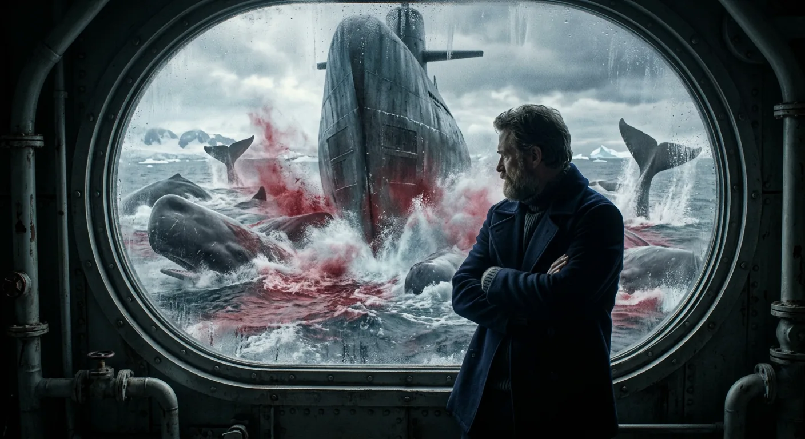
Ned Land's Restless Longing
As the *Nautilus* pressed ever southward through the waters of mid-March, abandoning any reasonable expectation of rounding Cape Horn to beat westward into the Pacific, the narrator found himself increasingly troubled by Captain Nemo's apparent determination to voyage toward the polar regions—a course that seemed nothing short of madness. This mounting unease was reflected most acutely in the demeanour of Ned Land, whose characteristic volubility had given way to a brooding silence that spoke more eloquently of his frustration than any outburst might have done. The Canadian's eyes, whenever they fell upon the Captain, burned with a suppressed fury that the narrator feared might precipitate some violent extremity.
It was in this atmosphere of simmering tension that Ned Land and Conseil appeared at the narrator's cabin with a seemingly innocuous inquiry regarding the vessel's complement. Through an ingenious calculation involving the submarine's tonnage, its air capacity, and the oxygen requirements of human respiration, they arrived at a figure of six hundred and twenty-five men who might theoretically subsist aboard for twenty-four hours—a number that dwarfed the actual crew by a factor of ten, yet still represented, to Ned's mind, far too many adversaries for three would-be escapees. The Canadian departed without comment, his silence more ominous than any declaration of intent, whilst Conseil remained to offer a touching defence of his compatriot's melancholy, observing that Ned possessed neither the scientific curiosity nor the aesthetic appreciation of oceanic wonders that sustained his companions through their captivity.
Fortune intervened, however, to rouse the harpooner from his despondency. Upon surfacing that same day, the *Nautilus* encountered a magnificent troop of whales disporting themselves upon the October seas—creatures that had fled to these high latitudes seeking refuge from the relentless persecution of their kind. Ned Land's professional instincts awakened with electric immediacy; he identified the cetaceans at five miles' distance, lamented his bondage to the steel plates beneath his feet, and ultimately sought Captain Nemo's permission to pursue them with all the ardour of his former trade.
The Captain's refusal was categorical and philosophical. Unlike the dugong hunt in the Red Sea, which had served the practical purpose of provisioning the crew, this would constitute killing for killing's sake—a privilege reserved for mankind that Nemo refused to countenance. He delivered a prescient condemnation of the whaling industry's rapacious greed, prophesying the eventual extinction of these magnificent creatures, and reminded his guests that whales already possessed natural enemies enough in the cachalots, swordfish, and sawfish that preyed upon them.
As if summoned by this very discourse, a formidable troop of cachalots—those macrocephalous terrors of the deep, all mouth and teeth and cruel intelligence—appeared on the horizon, bearing down upon the defenceless whales with murderous intent. Here Captain Nemo revealed an unexpected chivalry: the *Nautilus* would intervene on behalf of the inoffensive cetaceans against their ferocious aggressors. What followed was a spectacle of extraordinary violence—the submarine transformed into a colossal harpoon wielded by its master's hand, piercing and rending the sperm whales with its steel spur until the waters ran red for miles around and the surface churned with mutilated carcasses.
Ned Land, confronted with this wholesale slaughter, found his enthusiasm considerably dampened; he pronounced it butchery rather than hunting, a massacre unworthy of a true sportsman's harpoon. The Captain's pointed response—"Every one to his own"—accompanied by a penetrating gaze, suggested depths of meaning that boded ill for future relations between the two men. As the crew harvested milk from a slain mother whale, the narrator resolved to observe the Canadian's movements with redoubled vigilance, sensing that the imprisonment aboard the *Nautilus* was approaching some manner of crisis from which none might emerge unscathed.
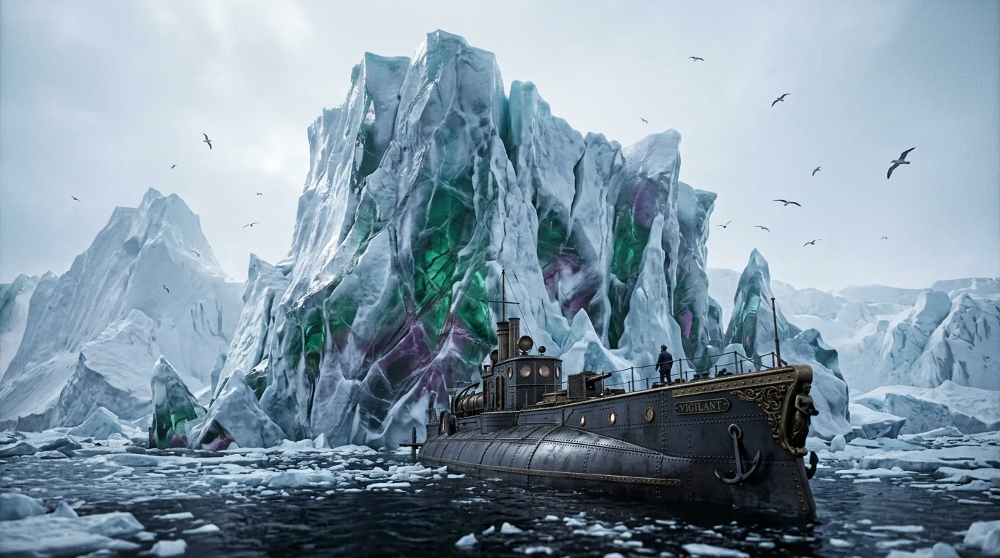
Frozen Cathedrals of the Antarctic
The *Nautilus* pressed ever southward along the fiftieth meridian, her course set with a determination that struck me as equal parts audacious and inexplicable. Whether Captain Nemo intended to reach the pole itself I could not then surmise, for history had furnished us with abundant evidence that such attempts invariably concluded in failure, and the season—the 13th of March in these Antarctic latitudes corresponding precisely to the 13th of September in northern climes—had already advanced beyond the bounds of prudence. Yet southward we drove, as though the vessel herself possessed some irresistible compulsion toward that frozen terminus of the globe.
By the 14th of March, at latitude fifty-five degrees, the first pale fragments of floating ice appeared—debris measuring some twenty to twenty-five feet in length, over which the sea curled with deceptive gentleness. Ned Land, that seasoned harpooner whose Arctic experience rendered such spectacles familiar, observed these formations with the practiced eye of one who has long known their dangers; but Conseil and I stood transfixed by their terrible beauty, admiring them as initiates beholding sacred mysteries for the first time. Along the southern horizon stretched what English whalers call the "ice blink"—that white dazzling band which announces, regardless of fog or cloud, the presence of ice packs beyond. The bergs themselves proved endlessly various: some veined with green as though traced by sulphate of copper, others resembling enormous amethysts suffused with light, still others refracting the day upon a thousand crystal facets or rising like perfect towns of marble with vivid calcareous reflections.
As we penetrated deeper into these polar waters, Captain Nemo demonstrated navigational instincts bordering on the preternatural. Through ice-fields and drift-ice, past mountains and plains of frozen water, he guided the *Nautilus* with a precision that charmed even the unflappable Conseil. When open passages vanished entirely, that remarkable vessel became a battering ram of infinite strength, hurling herself against brittle masses that shattered and fell around us like hail. Violent gales assailed us; thick fogs rendered the platform invisible from one end to the other; snow accumulated in heaps so hard they required pickaxes to break. Yet the *Nautilus* pressed on where any rigged vessel would have been hopelessly entangled—for what need had we of wind or coal when electricity provided our motive power?
By the 18th of March, however, even this indomitable vessel found herself positively blocked. Before us rose not mere streams or packs but an interminable barrier of mountains soldered together—an iceberg, as Ned Land pronounced it, that inevitable obstacle which had defeated every navigator before us. Captain Nemo's noon observation placed us at fifty-one degrees thirty minutes longitude and sixty-seven degrees thirty-nine minutes south latitude. The liquid sea had vanished utterly; only a desolate plain of confused blocks stretched beneath our spur, and over this frozen landscape reigned a stern silence broken solely by the wings of petrels and puffins. Everything was frozen—even the noise.
When I confessed to the Captain that we appeared irrevocably caught, he responded with that ironical tone I had come to know so well, affirming not only that the *Nautilus* would disengage herself but would proceed further still—to the pole itself. The audacity of this declaration momentarily staggered me, until Nemo revealed his stratagem: we would pass not over but *under* the iceberg, exploiting that providential law by which the maximum density of seawater lies one degree above freezing point. The calculations proved elegant in their simplicity—for every foot of ice above water, three feet extended below, and what were nine hundred feet to a vessel capable of descending to depths four times as great?
With reservoirs filled and panels sealed, we descended into the polar deep, leaving the frozen world above us like a ceiling of ice. For hours we navigated those imprisoned waters—deserted of fish, lit only by our electric lantern—while the *Nautilus* maintained the speed of an express train. The groping ascents that followed brought alternating hope and fear; sometimes we struck ice a thousand feet thick, sometimes only nine hundred yards. My sleep grew painful as I rose repeatedly to check the manometer, watching the thickness diminish by degrees until, at six in the morning on that memorable 19th of March, Captain Nemo appeared at the saloon door with words that set my heart racing: "The sea is open!"
What wonders awaited us in those uncharted polar waters, I could scarcely imagine—but I knew that whatever lay ahead would test both vessel and crew in ways none of us had yet foreseen.
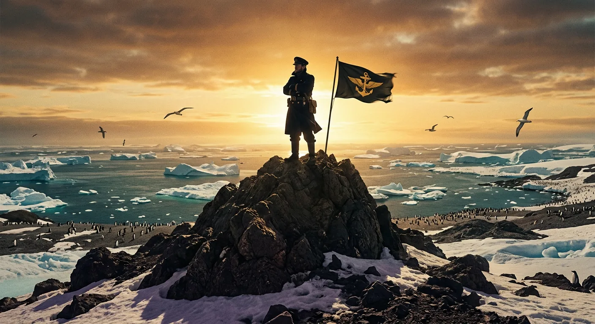
First Footsteps on the Antarctic Shore
The *Nautilus* emerged at last from its icy prison into the liberation of open water—a vast expanse of sea punctuated only by scattered fragments of ice and wandering icebergs, stretching toward a northern horizon where the great frozen mass still loomed as a distant spectre. The air teemed with birds beyond enumeration, whilst beneath the surface myriads of fishes navigated waters that shifted from intense blue to olive green according to the submarine topography. Spring, it seemed, had arrived within this Antarctic sanctuary, the thermometer registering three degrees above zero—a comparative warmth that quickened the blood and stirred the spirit to hope.
With a beating heart, I pressed Captain Nemo for confirmation of our position, but the enigmatic commander could offer no certainty until noon observations might be taken. The leaden sky, however, threatened to withhold its cooperation, and thus began an anxious vigil that would stretch across days of meteorological obstinacy.
We made landfall upon a solitary volcanic island, its shores strewn with the meagre flora of these desolate latitudes—lichens clinging to black rock, microscopic diatomas, purple and scarlet seaweed borne shoreward by the breaking waves. To Captain Nemo fell the honour of first setting foot upon this virgin soil, and I observed him mount a rocky promontory where he stood in silent ecstasy, arms crossed, drinking in possession of these southern regions with an intensity that bordered upon the religious.
The landscape proved a naturalist's paradise despite its apparent barrenness. Penguins by the thousands crowded the rocks, uttering their harsh cries with an extravagance of clamour that belied their sober gestures; albatrosses wheeled overhead, their magnificent wingspans measuring four and a half yards; petrels so oily that the inhabitants of the Faroe Islands might light them as lamps requiring only the addition of a wick. Sea-mammals dominated the shores in numbers sufficient to provision hundreds of vessels—seals of every variety stretched upon the earth and ice, sea-elephants measuring twenty feet in circumference, morses bellowing in what proved to be play rather than combat. Conseil, ever the faithful cataloguer, enquired after the names of each creature, whilst I found myself contemplating the classical metamorphoses that had transformed such beings into tritons and mermaids in the ancient imagination.
Yet nature proved a fickle mistress. Snow and fog conspired against our observations for two successive days, and I grew increasingly anxious as the 21st of March approached—for beyond that equinoctial date, the sun would vanish below the horizon for six months of polar night, rendering all measurements impossible. Captain Nemo, though visibly vexed, could not command the sun as he commanded the sea.
At last, on that fateful morning of the 21st, the weather lightened sufficiently for our attempt. We scaled a volcanic peak five hundred yards high, the Captain climbing with an agility that would shame the most seasoned hunter. At the summit, furnished with chronometer and lenticular glass, we watched the golden disc of the sun sink toward the northern horizon. My heart pounded as the critical moment arrived—if the half-disc coincided precisely with noon on the chronometer, we should know ourselves at the pole itself.
"Twelve!" I exclaimed, and Captain Nemo, in a voice of utmost gravity, confirmed what the instruments revealed: we had achieved the South Pole, the ninetieth degree of latitude.
There, upon that frozen pinnacle of the world, Captain Nemo unfurled a black banner bearing a golden "N" and claimed possession of these territories in his own name alone—a declaration of sovereignty as mysterious as the man himself. His farewell to the departing sun, bidding six months of shadow to descend upon his new domains, carried in it something both triumphant and profoundly melancholic.
But the polar night was descending, and with it, as I would soon discover, came perils that would test the *Nautilus* and all her company to their uttermost limits.
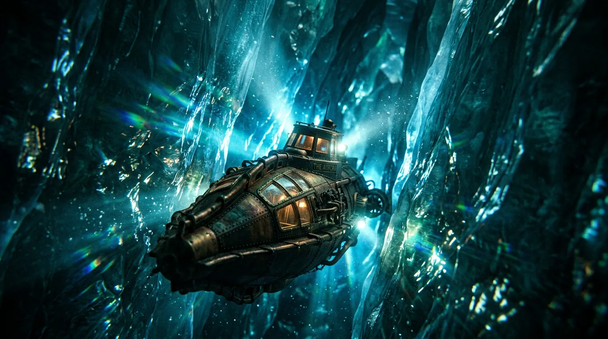
Trapped Beneath the Turning Ice
On the morning of March 22nd, at six o'clock precisely, the preparations for departure commenced under conditions of considerable severity—the thermometer registering twelve degrees below zero, the Antarctic constellations blazing with that peculiar intensity which only the polar regions can produce, and the Southern Cross itself presiding over the scene like some celestial sentinel of those frozen latitudes. The sea presented everywhere a uniform aspect of gathering ice; blackish patches upon the surface betrayed the formation of fresh crystals, whilst the great southern basin lay locked in the absolute inaccessibility of its six-month winter. The whales, one might reasonably suppose, had long since retreated beneath the icebergs in search of more hospitable waters, leaving only the seals and morses—those hardy creatures possessed of the admirable instinct to maintain breathing holes in the frozen expanse—as sole proprietors of the polar continent.
The *Nautilus*, having filled her reservoirs, descended to a depth of one thousand feet and proceeded northward at fifteen miles per hour, gliding beneath the immense body of the iceberg as night fell. At three in the morning, however, the vessel's peaceful progress was violently interrupted. A tremendous shock threw the narrator from his bed into the middle of his cabin, and upon reaching the saloon—where the furniture lay in considerable disarray, though the windows had mercifully held fast—he discovered the submarine lying motionless upon her starboard side. Ned Land, arriving with Conseil, pronounced his grim assessment: the *Nautilus* had struck, and unlike her previous misadventure in Torres Straits, the Canadian doubted she would right herself with any ease.
The manometer revealed a depth exceeding one hundred and eighty fathoms—a troubling circumstance that demanded Captain Nemo's explanation. When at last the Captain appeared, his customarily impassive countenance betrayed unmistakable signs of uneasiness. Upon inquiry, he distinguished between incident and accident with characteristic philosophical precision: an enormous block of ice—an entire mountain, undermined at its base by warmer currents—had overturned, striking the *Nautilus* and raising her with irresistible force into beds of thinner ice. Human laws might be defied, Nemo observed, but natural ones demanded submission.
The pumps labored to empty the reservoirs, yet the rising vessel remained prisoner to the ascending ice block. Minutes passed in anxious silence until, gradually, the submarine began to right herself, the hanging pictures and tilted partitions returning to their proper attitudes. The relief, however, proved short-lived—for when the *Nautilus* regained her equilibrium, she found herself imprisoned within a tunnel of ice, walled on all sides by dazzling glacial barriers some twenty yards apart.
And here occurred a spectacle of such transcendent beauty that even the practical-minded Ned Land was compelled to acknowledge its magnificence, though he added darkly that they were witnessing sights God never intended for human eyes. The voltaic rays, reflected violently from the ice walls, transformed the tunnel into a mine of living gems—sapphires casting blue fire against the green of emeralds, opal shades of wonderful softness, and diamonds of such brilliance that the eye could scarcely endure them. When the *Nautilus* accelerated, these quiet lustres became blinding flashes that forced Conseil to clap his hands over his eyes in self-protection.
The tunnel, however, proved obstructed, and the submarine was forced into retrograde motion. The narrator affected a confidence he did not possess, assuring his companions that they would simply exit through the southern opening. Yet when a second shock struck from behind at twenty-five minutes past eight, and Captain Nemo entered the saloon with gravity written upon his features, the terrible truth was confirmed: the iceberg had shifted, closing every outlet, and the *Nautilus* was blocked up entirely—imprisoned beneath hundreds of feet of ice with no apparent means of escape.
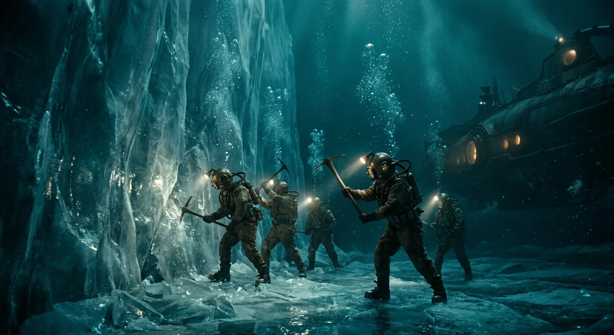
Trapped Beneath the Ice
The *Nautilus* lay entombed in ice—imprisoned above, below, and upon every side by walls of frozen sea that admitted neither escape nor appeal. Captain Nemo, surveying this crystalline prison with his characteristic mathematical composure, addressed his companions as though delivering a lecture on mortality itself: they faced, he explained with unsettling calm, two avenues of death—to be crushed by the encroaching ice, or to suffocate as their air supply dwindled to nothing. The provisions aboard would outlast them all; hunger was not their enemy. Asphyxiation, however, announced itself with grim certainty: forty-eight hours of breathable air remained in the reservoirs, and already the atmosphere within the vessel grew heavy with carbonic acid.
The Captain's solution was characteristically direct—they would dig their way to freedom. Soundings revealed that ten yards of ice separated them from open water below, and so an immense trench was excavated at eight yards from the port-quarter, the crew attacking the frozen mass with pickaxes and mechanical screws. The work proceeded with desperate energy; even the Canadian Ned Land, so often at odds with his submarine captivity, volunteered his considerable strength to the enterprise. Professor Aronnax and the faithful Conseil joined the labour in turn, finding paradoxical relief in the exertion—for outside the *Nautilus*, supplied by Rouquayrol apparatus, they breathed air far purer than the poisoned atmosphere accumulating within.
Yet mathematics conspired against hope. Twelve hours of relentless toil yielded but one yard of excavation; at such pace, five nights and four days would be required to break free—and they possessed air for scarcely two. Worse still, the surrounding waters showed alarming tendency toward solidification, the cold creeping inward even as they laboured, threatening to seal them in ice as surely as cement. Captain Nemo received this intelligence with his usual imperturbability: they must simply work faster than the freezing.
It was then that desperation bred invention. The Captain, reflecting in silence, struck upon a notion that seemed at first absurd—boiling water. Jets of scalding liquid, pumped continuously through the surrounding sea, might arrest the congelation and prevent the crushing embrace of ice. The distillatory machines were pressed into service, electric heat driving water to one hundred degrees before injection into the frozen depths. Degree by degree, the thermometer climbed; solidification was held at bay.
By the sixth day of imprisonment, with the crew gasping and rattling in the throat, with Professor Aronnax half-conscious and purple-faced upon a divan, only a single yard of ice remained between them and deliverance. Captain Nemo resolved to crush it by force. The *Nautilus* was lightened, floated above the weakened ice-bed, then weighted with eighteen hundred tons of ballast water and dropped like a plumb-bob through the fractured barrier. The vessel plunged—sank—then rose at terrific speed toward open water, her screw driving her northward at forty miles an hour.
Aronnax, his lungs empty, his consciousness fading, found himself revived by the selfless courage of Ned and Conseil, who had preserved their final particles of air for him alone. And then—the *Nautilus* tilted her stern, raised her bows, and drove upward like a battering-ram against the ice-field overhead, bursting through at last into open atmosphere, the panels torn away, pure air flooding every compartment of the vessel.
They had escaped the ice-tomb; yet as the crew drew ragged breaths of salvation, one could not help but wonder what fresh perils awaited them in the waters ahead.
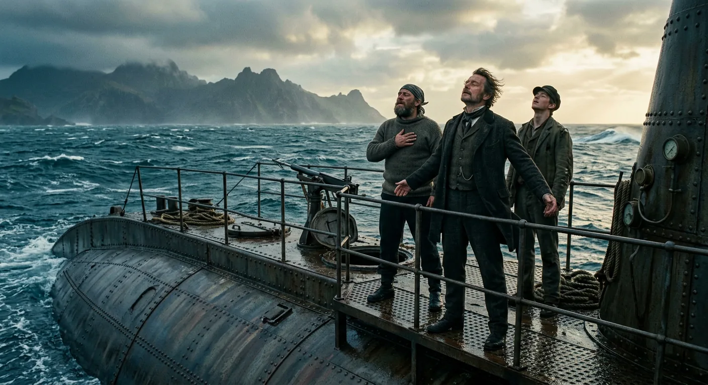
Gasping Northward Through Atlantic Waters
The platform of the *Nautilus* received me that day like a resurrection—though by what means I arrived there, whether carried bodily by the Canadian's sturdy arms or propelled by some final desperate instinct, I cannot with certainty recall. What I do remember, with the vividness that only near-death can impart upon the senses, is the first inhalation of that vivifying sea-air, drawn into lungs that had grown accustomed to the stale and rationed atmosphere of our submarine prison. My companions, Ned Land and the faithful Conseil, drank in those fresh particles with the abandon of men long denied sustenance, though we three had fared better than the other wretches aboard, whose weakened constitutions could scarcely tolerate even the simplest nourishment. We alone required no restraint; we could breathe freely, and the breeze—the breeze alone—filled us with intoxicating joy.
Words of gratitude came first to my lips, for these two devoted companions had preserved my life through those final agonizing hours. I declared us bound together forever, under infinite obligation—a sentiment the Canadian received with characteristic bluntness, announcing his intention to repay himself by bringing us both along when he escaped this infernal vessel. The question of our direction occupied us then: we sailed northward, the sun confirming our course, though whether Captain Nemo would deliver us into the frequented Atlantic or the desolate Pacific remained uncertain.
The *Nautilus* proceeded with remarkable speed. By the thirty-first of March we rounded Cape Horn, and all memory of our imprisonment in the polar ice dissolved like morning frost. Captain Nemo himself remained conspicuously absent, yet the daily markings on the planisphere revealed our trajectory—northward through the Atlantic, to my considerable relief. We sighted Terra del Fuego on the first of April, that land of perpetual smoke rising from native huts, with Mount Sarmiento's pointed summit standing sharp against the sky, a harbinger of fair weather. The submarine depths revealed magnificent gardens of seaweed—cables of fuci measuring three hundred yards, velp buried in coral concretions, all serving as feast and shelter for countless crustaceans, molluscs, seals, and otters dining in the English fashion.
Past the Falklands we sailed, past Patagonia and the vast estuary of the Plata, covering sixteen hundred miles since Japan. Captain Nemo, to Ned Land's mounting frustration, maintained such velocity along Brazil's inhabited coasts that neither fish nor bird could follow, and all natural curiosities escaped observation entirely. By April ninth we reached Cape San Roque, then descended into the profound submarine valley stretching toward Sierra Leone—that geological basin of the Atlantic, walled by cliffs three and a half miles high, its floor dotted with mountains charted by Nemo's own hand.
On April eleventh, land appeared at the Amazon's mouth, that tremendous estuary freshening the ocean for leagues around. The Guianas lay tantalizingly close—twenty miles to French territory and easy refuge—yet furious waves forbade any escape attempt, and Ned Land wisely held his tongue. I occupied myself instead with studies of our nets' marvellous haul: phyctallines crowned with tentacles, translucid molluscs, cartilaginous fish of every description. Poor Conseil, seizing what appeared a harmless ray, learned the shocking lesson of the cumana—that electric torpedo whose powerful organ paralyzed half his body before the Canadian and I could revive him.
The following day brought us to the Dutch coast near the Maroni, where herds of manatees grazed peacefully—those sirenian giants whom provident nature designed to clear submarine prairies of choking weeds, and whose near-extermination by human hunters had poisoned tropical rivers with yellow fever.
Yet even as I contemplated nature's delicate balance, the *Nautilus* pressed northward still, and I could not help wondering what strange designs Captain Nemo harbored for us in the waters ahead.
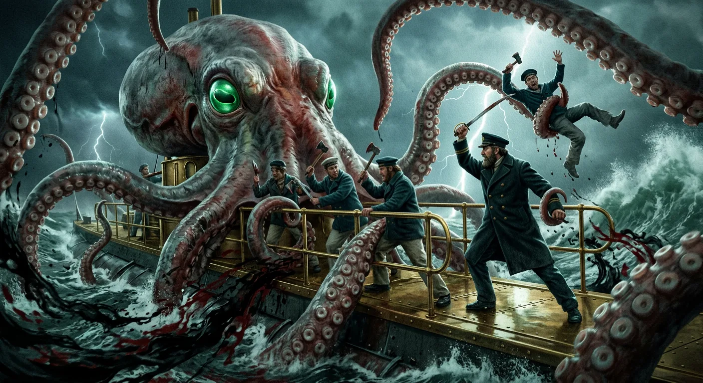
Monsters of Legend and Sea
For several days the *Nautilus* maintained a prudent distance from the American coastline, evidently disinclined to venture into the treacherous tides of the Gulf of Mexico or the Caribbean Sea. On the sixteenth of April, the silhouettes of Martinique and Guadaloupe materialized briefly on the horizon, some thirty miles distant—their tall peaks glimpsed for but an instant before vanishing into the maritime haze. This fleeting proximity to inhabited shores proved a bitter disappointment to Ned Land, who had pinned considerable hope upon executing his escape in these waters, whether by making landfall or hailing one of the innumerable vessels trafficking between the islands. Yet flight remained utterly impracticable without possession of the boat, and in the open sea, such schemes dissolved into fantasy. The three companions—the Canadian, Conseil, and the narrator—had now endured six months of captivity aboard Captain Nemo's extraordinary vessel, traversing some seventeen thousand leagues with no terminus in sight.
More troubling still was the marked transformation in their enigmatic captor. Captain Nemo had grown increasingly grave and withdrawn, shunning society and abandoning those submarine lectures that had once illuminated the ocean's marvels for his unwilling guest. What had occasioned this melancholy retreat remained impenetrable, though the narrator—ever mindful of his scientific obligations—resolved that his accumulated studies must eventually see daylight in the form of a true book of the sea.
Near the submarine cliffs of the Bahamas archipelago, festooned with enormous weeds, a peculiar pricking sensation drew the company's attention to the waters beyond the viewport. What followed was an extended discourse upon the legends and verifiable facts surrounding the poulp—that colossal cephalopod whose existence straddled the boundary between natural history and maritime mythology. From the fantastical accounts of Olaus Magnus, who spoke of mile-long octopi mistaken for islands, to the documented encounter of the despatch-boat *Alector* in 1861, which had unsuccessfully attempted to capture a monstrous cuttlefish near Teneriffe, the narrator marshalled evidence with scholarly precision. Conseil's deadpan recollection of witnessing a ship-devouring octopus—which proved, upon interrogation, to be merely a painting in a church at St. Malo—furnished a moment of levity before the genuine horror manifested itself at the porthole.
The creature that presented itself measured eight yards in length, its enormous staring green eyes fixed upon the *Nautilus* with unmistakable hostility. Twenty-seven feet of writhing tentacles, studded with two hundred and fifty air holes, extended from a spindle-shaped body weighing perhaps five thousand pounds—a bird's beak grafted impossibly onto a mollusc, colours shifting from livid grey to reddish brown with each pulsation of agitation. Seven of these monsters soon surrounded the vessel, their horned beaks gnashing against the iron hull, until the screw jammed and the *Nautilus* lay immobilized.
Captain Nemo emerged from his seclusion to announce the extraordinary combat to come: man against beast, hatchets against soft flesh impervious to electric bullets. Upon the platform, amid waves of blood and ink and the suffocating smell of musk, the crew fought desperately as tentacles invaded from every quarter. One sailor—a Frenchman, the narrator realized with horror upon hearing his cries for help—was seized and lifted into the air, balanced at the caprice of that enormous trunk. Despite Captain Nemo's furious assault, the creature ejected its cloud of black liquid, and when vision returned, the unfortunate countryman had vanished forever beneath the waves.
Ned Land himself narrowly escaped bisection when a formidable beak opened above him, saved only by Captain Nemo's timely intervention—an act of rescue that settled some unspoken debt between the two men. When the quarter-hour of carnage concluded and the mutilated monsters retreated into the deep, Captain Nemo stood upon the platform covered in blood, exhausted, gazing upon the sea that had claimed his companion, great tears gathering in his eyes.
It was a grief that hinted at depths within the Captain yet unexplored, and as the *Nautilus* prepared to resume its mysterious voyage, one could not help but wonder what further revelations—or tragedies—awaited in the leagues ahead.
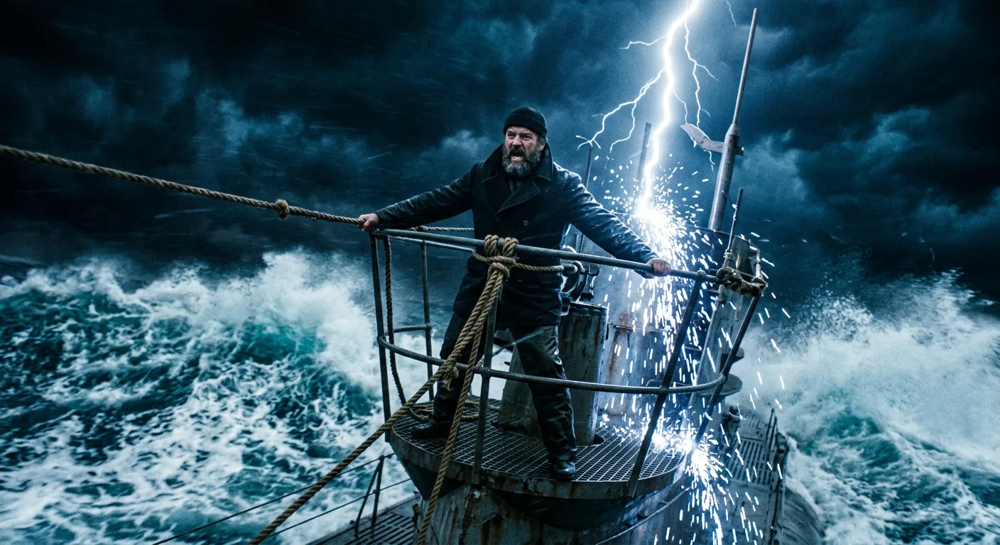
Grief, Currents, and Captive Longings
The terrible events of April 20th remained seared upon my consciousness—that ghastly encounter with the poulp which I had committed to paper under violent emotion, which Conseil and the Canadian pronounced exact as to facts but insufficient as to effect. Indeed, to render such horrors properly, one would require the pen of that most illustrious chronicler of oceanic terror, the author of *The Toilers of the Deep*. Captain Nemo himself had wept at the waves, mourning his second lost companion since our arrival—that unfortunate Frenchman crushed and stifled by the creature's dreadful arms, denied even the peaceful rest of the coral cemetery. In his final moments, the dying man had abandoned the *Nautilus's* conventional tongue to cry out in his native French, and this revelation stirred within me an insoluble mystery: had there been, among this enigmatic crew composed of divers nationalities, a fellow-countryman representing France?
The Captain's grief impressed itself upon his vessel as surely as if the *Nautilus* possessed a soul. For ten days she floated aimlessly, a corpse upon the waves, until the 1st of May, when she resumed her northerly course past the Bahamas and entered that grandest of ocean rivers—the Gulf Stream. This remarkable current, salter than the surrounding sea, flows freely through the Atlantic at depths of fifteen hundred fathoms, its phosphorescent waters rivalling our electric lights during the stormy weather that plagued us throughout early May.
As we crossed Cape Hatteras, Ned Land grew increasingly desperate. The proximity to inhabited shores—thirty miles from the Union's coast, where steamers plied ceaselessly between New York and the Gulf of Mexico—tantalized him cruelly, yet tempestuous weather rendered escape by frail boat suicidal. The Canadian's patience fractured entirely; he spoke of the St. Lawrence, his river, of Quebec, his native town, with such fury that I feared he might hurl himself into the sea rather than endure further imprisonment.
At his insistence, I sought audience with Captain Nemo and found him bent over his work-table, where lay an open manuscript containing the sum of his oceanic studies—destined, he explained, to be cast adrift in a floating case by the last survivor of the *Nautilus*, that his name and history might not perish with him. When I pressed the matter of our liberty, suggesting we might preserve his manuscript ourselves, he rose and declared with cold finality that whoever enters the *Nautilus* must never quit it. My arguments concerning Ned Land's nature—the love of liberty, the hatred of slavery that might engender schemes of revenge—were silenced by his dismissal: *Let this first time you have come to treat of this subject be the last.*
Our situation had grown critical indeed when, on the 18th of May, the hurricane descended upon us off Long Island. Rather than seek refuge in the depths, Captain Nemo by unaccountable caprice chose to brave the tempest at the surface, lashing himself to the platform as monstrous waves swept past. The *Nautilus* rolled and pitched terribly beneath cloud-drifts saturated with spray, winds howling at forty leagues per hour, lightning streaking an atmosphere on fire. The Captain seemed to court a death worthy of himself—a death by lightning—as the steel spur raised skyward acted as conductor for long, terrible sparks. Only at midnight did he finally descend, flooding the reservoirs until we sank to twenty-five fathoms, where at last we found that profound quiet, that perfect silence, that peace which none upon the surface could have believed possible whilst such fury raged above.
Yet even as the storm subsided in those dark, tranquil depths, I sensed that the tempest within Ned Land's breast had only just begun to gather its full and terrible force.
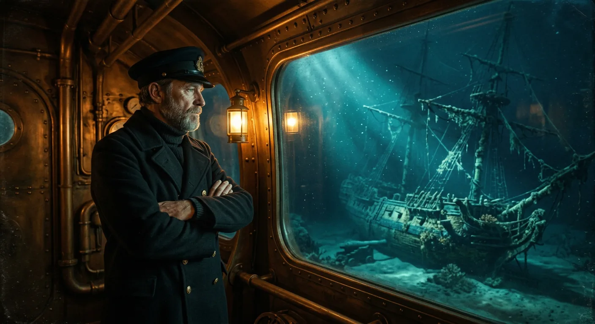
The Atlantic Cable's Silent Depths
In the aftermath of the storm, the *Nautilus* found itself driven eastward—or, to speak with proper nautical precision, northeastward—and with this deviation vanished all hope of reaching the shores of New York or the St. Lawrence. Poor Ned Land, that great harpooner whose heart yearned so desperately for terra firma, withdrew into a solitude as profound and impenetrable as Captain Nemo's own. Conseil and I, however, maintained our companionship as the vessel wandered through those treacherous northern waters, threading through fogs of such density that one could scarcely distinguish friend from phantom. The ocean floor beneath us lay strewn with the debris of maritime catastrophe—a veritable battlefield where conquered vessels rested in various states of decay, some ancient and encrusted beyond recognition, others still gleaming with the fresh polish of recent disaster.
By the fifteenth of May, we had reached the extreme southern edge of the Bank of Newfoundland, that remarkable submarine plateau formed by the confluence of the warm Gulf Stream and the cold counter-current descending from the Arctic. Here the *Nautilus* descended to considerable depths, and on the seventeenth, at more than fourteen hundred fathoms, I beheld a sight that momentarily deceived even the observant Conseil—the transatlantic telegraph cable, lying serpent-like upon the ocean floor. I took the opportunity to enlighten my companion regarding the extraordinary history of this technological marvel: the failed attempts of 1857 and 1863, the perseverance of that bold American promoter Cyrus Field, and the ultimate triumph of the *Great Eastern* in July of 1866, when young America transmitted to old Europe those words of scriptural wisdom so rarely heeded by mankind. The cable itself, now bristling with foraminiferae and encrusted with protective shells, rested at depths where even Mont Blanc might have been submerged without its summit breaking the surface.
Yet it was not telecommunications that occupied Captain Nemo's brooding mind as we approached European waters. Rounding the Emerald Isle, I caught a fleeting glimpse of Cape Clear and wondered whether our mysterious commander might venture into the English Channel. Ned Land, roused from his melancholy by the proximity of civilization, pestered me incessantly with questions I could not answer. The Captain remained invisible, his intentions utterly opaque.
On the thirty-first of May, the *Nautilus* began describing peculiar circles upon the water, as though searching for some precise location of profound significance. Captain Nemo emerged to work the ship's log, his countenance darker and more troubled than I had ever witnessed. What secret grief could proximity to these European seas have awakened in that enigmatic soul?
The following day revealed all. After taking the sun's altitude with meticulous care, the Captain pronounced with quiet solemnity: "It is here." The vessel descended to a depth exceeding four hundred and twenty fathoms, where our lantern illuminated a haunting spectacle—the ruins of a great ship, her masts long vanished, her hull encrusted with the white lime of decades. In measured tones heavy with reverence, Captain Nemo recounted her history: the *Marseillais*, launched in 1762, rechristened the *Avenger* by the French Republic, and on this very date seventy-four years prior, having lost her three masts and a third of her crew in battle against the English, she had chosen to sink rather than surrender, her colors nailed defiantly to the poop as three hundred and fifty-six sailors descended into the depths crying "Long live the Republic!"
"The *Avenger*!" I exclaimed, and Captain Nemo, crossing his arms, murmured with unmistakable emotion: "Yes, sir, the *Avenger*! A good name!"
In that moment, watching the Captain contemplate this watery tomb of revolutionary martyrdom, I felt I had glimpsed something essential about the man—though whether this revelation would bring us closer to understanding his true nature, or lead us deeper into mystery, remained yet to be discovered.
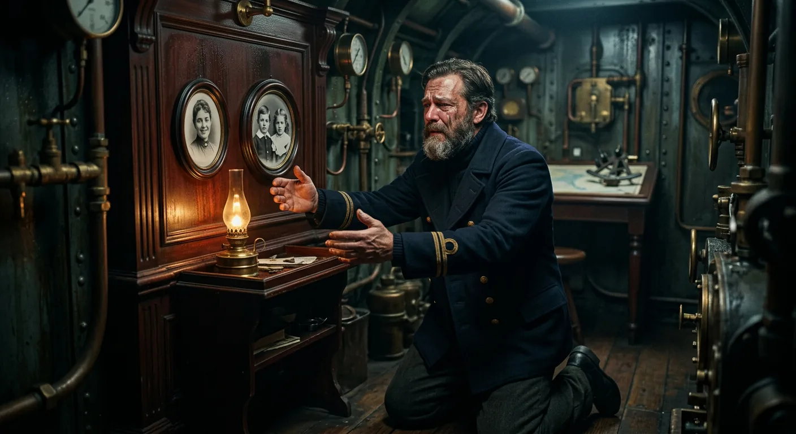
Vengeance Surfaces From the Deep
The chapter opens in the immediate aftermath of Captain Nemo's emotional revelation concerning the Avenger, that patriot ship whose glorious wreckage he had contemplated with such burning intensity. Professor Aronnax, watching the Captain's outstretched hand and glowing eye, finds himself grappling with the profound mystery of this strange man—neither his origins nor his destination could be discerned, yet the naturalist perceives something transcending mere scientific genius: a hatred, either monstrous or sublime, which time itself could never weaken. The question of vengeance hangs in the waters like a portent.
As the Nautilus rises toward the open air, a dull boom shatters the silence. Upon the platform, Ned Land identifies the sound immediately—a gunshot—and directs attention toward an approaching vessel, a large armoured two-decker ram belching thick black smoke from her twin funnels. The Canadian's hope flares dangerously; here, perhaps, lies salvation from their submarine imprisonment. Yet the warship, flying no colours but a long pennant from her mainmast, commences firing upon the Nautilus. The truth crystallises with terrible clarity in Aronnax's mind: the nations of the world have at last recognised that no supernatural cetacean prowls these seas, but rather a submarine engine of destruction commanded by a man who has vowed deadly hatred against them.
When Ned attempts to signal their presence—honest men, prisoners, not accomplices—Captain Nemo strikes him down with an iron hand. Terrible to hear, still more terrible to behold, his face deadly pale, pupils fearfully contracted, the Captain roars his defiance at the approaching man-of-war: "Ah, ship of an accursed nation, you know who I am!" Upon the fore platform he unfurls a black flag, the same standard he had planted at the South Pole, declaring his identity through that dark emblem alone.
Ordered below, Aronnax learns the Captain's intention in words as cold as ocean depths: "I am going to sink it." Appeals prove useless. "I am the law, and I am the judge!" Nemo thunders. "I am the oppressed, and there is the oppressor! Through him I have lost all that I loved, cherished, and venerated—country, wife, children, father, and mother. I saw all perish!"
Night descends. The prisoners resolve to flee when opportunity permits, to escape before becoming unwilling accomplices to this act of vengeance whose justice they cannot judge. But at the critical moment, the upper panel seals shut; water hisses into the reservoirs; the Nautilus descends beneath the waves. The vessel does not strike at the warship's impenetrable armoured cuirass, but below the waterline, where no metallic covering offers protection.
The steel spur penetrates the hull like a needle through sailcloth. Through the port panel, Aronnax watches the dreadful spectacle—the open shell through which water thunders, the double line of guns, the bridge covered with black agitated shadows. The poor creatures crowd the ratlines, cling to masts, struggle beneath the rising tide. It is a human ant-heap overtaken by the sea. An explosion tears through the vessel's decks; the ship sinks with terrible rapidity, her topmast laden with victims, her spars bending under the weight of doomed men, until at last the dark mass disappears entirely, drawing down the dead crew in its strong eddy.
Captain Nemo, that terrible avenger—perfect archangel of hatred—watches until all is finished. Then he retires to his cabin, where Aronnax glimpses, beneath portraits of his heroes, the image of a woman still young and two small children. The Captain stretches his arms toward them and, kneeling, bursts into deep sobs.
The massacre complete, the mystery of Nemo's vengeance at last partially illuminated, the prisoners found themselves more desperate than ever to escape—and circumstances would soon force their hand in ways none could foresee.
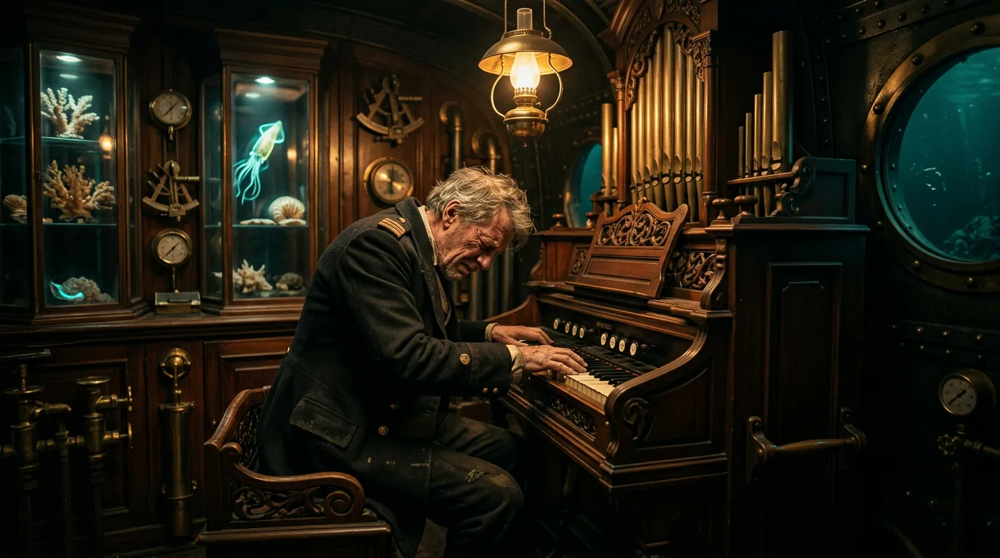
Flight Into the Unknown North
Darkness enveloped the *Nautilus* in the wake of that dreadful spectacle of vengeance, and silence pressed upon the saloon like the weight of fathoms above. The vessel fled northward at extraordinary speed—a hundred feet beneath the surface, then twenty-five miles an hour across the Atlantic—carrying its passengers away from that desolate theatre of destruction. Professor Aronnax, returning to his cabin where Ned Land and Conseil waited in grim silence, found himself possessed by an insurmountable horror for Captain Nemo. Whatever sufferings the Captain had endured at the hands of his enemies, he had forfeited all moral authority through his terrible retaliation, transforming Aronnax from mere prisoner into unwilling witness of wholesale slaughter.
The days that followed blurred into a disorienting succession of fog and perpetual twilight. The clocks aboard had ceased their duty; time itself seemed suspended as the *Nautilus* plunged through the northern seas at unaccountable velocity. Aronnax could not determine whether they approached Spitzbergen or Nova Zembla, whether they would explore the White Sea or the Gulf of Obi. The imagination foundered in those regions where Edgar Poe's Gordon Pym had wandered, where veiled figures of impossible proportion guarded approaches to the pole. Captain Nemo had vanished entirely from view, as had his second and every member of the crew. The vessel surfaced only mechanically to renew its air, panels opening and closing without human agency. Even the Canadian, his strength and patience exhausted, had retreated into dangerous silence, watched constantly by the devoted Conseil.
Then came the morning—its date unknowable—when Ned Land roused Aronnax from troubled sleep with whispered urgency: they would fly that very night. Land had taken their bearings through fog, discovering land some twenty miles distant. The sea raged violently, but the Canadian had secured provisions and determined that death was preferable to continued imprisonment. Aronnax agreed without hesitation: they would escape or perish together.
Throughout that interminable final day aboard the *Nautilus*, Aronnax wandered the saloon one last time, fixing in memory those unrivalled collections destined to perish with their creator. He dressed in sea clothing, gathered his precious notes, and waited with heart pounding against his ribs. At half-past nine, the mournful strains of Captain Nemo's organ drifted through the vessel—a sad harmony, the wail of a soul longing to break its earthly bonds. Aronnax crept through the darkened saloon, scarcely breathing, as the Captain sat absorbed in musical ecstasy. He had nearly reached the library when Nemo rose, gliding forward like a spectre, and murmured words that would haunt Aronnax forever: "Almighty God! enough! enough!"
Was it confession? Remorse? There was no time to consider. Aronnax rushed to join his companions in the small boat. But as Ned worked to loosen the bolts, voices erupted throughout the vessel, repeating one dreadful word: *Maelstrom*. The *Nautilus* had entered the infamous whirlpool off the Norwegian coast, that navel of the ocean from which no vessel escapes. The submarine spiraled inward with sickening velocity, its steel muscles cracking against the tremendous forces, until finally the boat tore free, hurled like a stone into the vortex—and Aronnax's head struck iron, plunging him into unconsciousness.
What fate awaited the three companions in that terrible gulf, and whether Captain Nemo met his end in those crushing waters, remained to be discovered when consciousness returned.
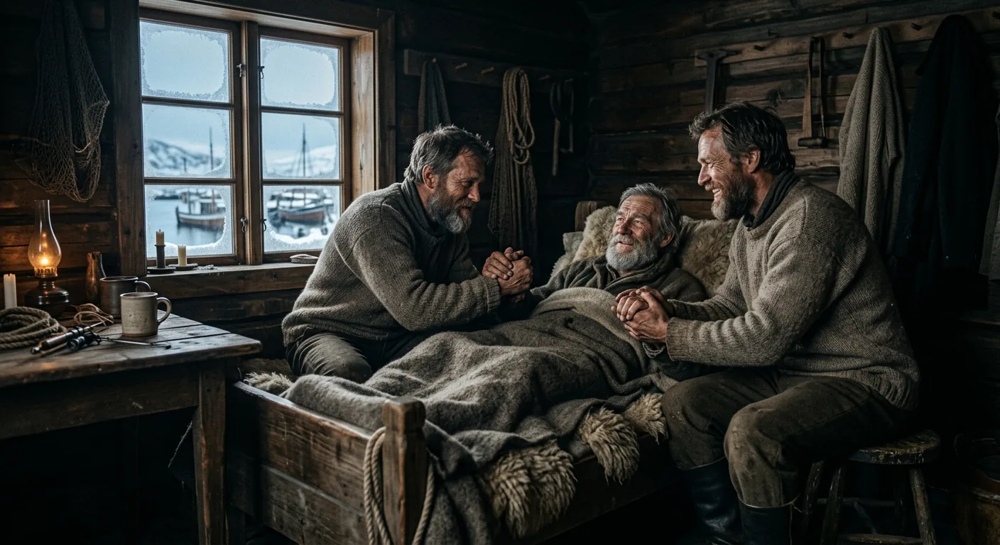
Survivors Reflect on an Incredible Journey
And so concludes the extraordinary submarine odyssey—though the precise mechanism of its termination remains shrouded in that peculiar obscurity which so often attends the most violent natural phenomena. Of the harrowing passage through the maelstrom's churning vortex, of the desperate hours within the small boat as it was seized and spun by those terrible Norwegian eddies, the narrator confesses himself entirely unable to furnish particulars. Consciousness had fled, and with it all capacity for observation; the scientific chronicler who had so meticulously documented twenty thousand leagues of submarine marvels found himself, at the decisive moment, reduced to mere insensible cargo upon the waters.
When awareness returned—gradually, as light penetrates the deepest ocean trenches—it was to discover himself safely ensconced within a humble fisherman's dwelling upon the Loffoden Isles, that remote archipelago off Norway's northern coast where the Gulf Stream's warming influence renders habitation possible despite the Arctic latitude. The faithful Conseil and the indomitable Ned Land, both preserved intact through whatever mysterious providence had delivered them from the gulf's fury, sat vigil at his bedside, clasping his hands with an emotion that required no verbal articulation. The embrace that followed spoke eloquently of shared trials survived, of a brotherhood forged in the phosphorescent depths and tempered by months of captivity beneath the waves.
Immediate return to France proved geographically impractical—the communication infrastructure between Norway's northernmost reaches and the civilized south being lamentably sparse—necessitating a patient wait for the monthly steamboat service from Cape North. This enforced leisure the narrator employed in the revision and authentication of his manuscript, affirming with documentary solemnity that not a single fact had been omitted nor detail embellished in the faithful rendering of this incredible expedition through an element heretofore inaccessible to mankind.
Yet questions multiply rather than resolve themselves. What fate befell the *Nautilus* in that tremendous whirlpool where countless vessels have met their doom? Does Captain Nemo yet live, pursuing his terrible retaliations against the surface world's oppressors, or did that final hecatomb—that last devastating encounter—mark the cessation of his vengeance? The narrator permits himself to hope: hope that the magnificent vessel conquered even the maelstrom's fury; hope that within that savage, wounded heart, hatred might yield at last to the contemplative peace that communion with oceanic wonders ought to inspire. If the judge could but disappear, might not the philosopher—that brilliant, tormented soul—continue his peaceful explorations? Strange his destiny certainly was, yet sublime also, as the narrator himself, having lived ten months of that unnatural existence, could intimately comprehend.
The ancient question posed in Ecclesiastes three millennia past—"That which is far off and exceeding deep, who can find it out?"—now possessed, among all humanity then living, only two qualified respondents: Captain Nemo, and the narrator himself, bound together eternally by their shared penetration of mysteries the surface world could scarcely imagine, yet separated now by circumstances as vast and unfathomable as the twenty thousand leagues they had traversed together beneath the sea.
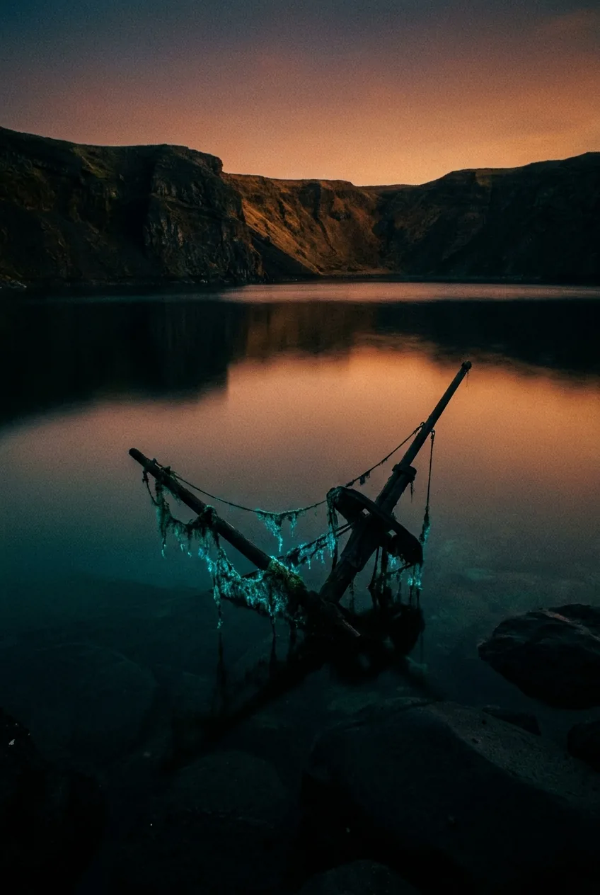